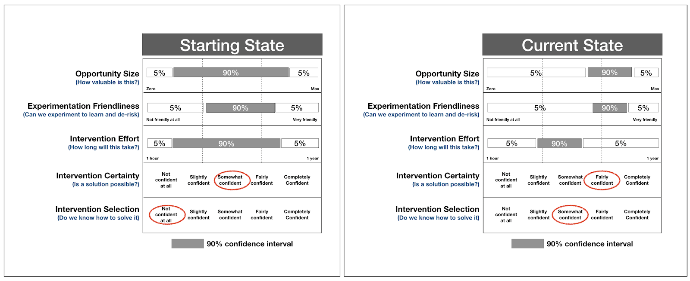
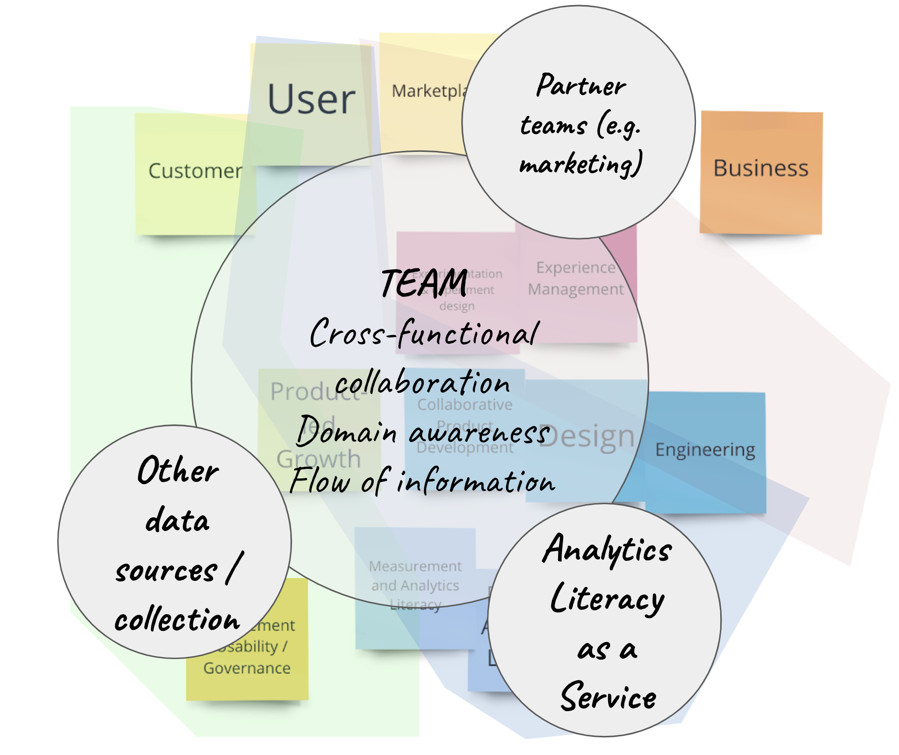

The Beautiful Mess 2020
In 2020, I wrote a weekly post about the beautiful mess of product development. Topics covered included product management, design, cross-functional collaboration, change agency, general decision making, continuous improvement, and sustainable approaches to work. I had intended to write a book in 2020, but had to stop. It was too difficult with the pandemic, a toddler, and a full-time job. Meanwhile I kept plodding away at these posts. A friend suggested I release this as "a book", and while I don't consider this to be a truly cohesive body of work I do believe there are some good, actionable ideas here.
Found this helpful?
Leave a tip... or Purchase EPUB/MOBI Versions of Book
Table of Contents
- TBM 1/53: The Empty Roadmap
- TBM 2/53: Three Options
- TBM 3/53: Experiment With Not On
- TBM 4/53: Teach by Starting Together
- TBM 5/53: It's Hard to Learn If You Already Know
- TBM 6/53: Way and Why
- TBM 7/53: Learning Backlogs
- TBM 8/53: Product Initiative Reviews
- TBM 9/53: Some MVP and Experiment Tips
- TBM 10/53: Hammers & Nails
- TBM 11/53: The Know-It-All CEO
- TBM 12/53: Not BAU
- TBM 13/53: Good Idea?
- TBM 14/53: 1s and 3s
- TBM 15/53: Why Can't This Be Like...
- TBM 16/53: The Boring Bits
- TBM 17/53: Measuring to Learn vs. Measuring to Conform
- TBM 18/53: Blank Slates, Seedlings, Freight Trains, and Gardening
- TBM 19/53: Drivers, Constraints, and Floats
- TBM 20/52: Questions and Context
- TBM 21/53: "Vision" and Prescriptive Roadmaps
- TBM 22/53: Attacking X vs. Starting Y
- TBM 23/53: Privilege & Credibility
- TBM 24/53: Mapping Beliefs (and Agreeing to Disagree)
- TBM 25/53: Persistent Models vs. Point-In-Time Goals
- TBM 26/53: Kryptonite and Curiosity
- TBM 27/53: The Lure of New Features and Products
- TBM 28/53: Developer & Designer Collaboration (in the Real World)
- TBM 29/53: Shipping Faster Than You Learn (or…)
- TBM 30/53: Healthy Forcing Functions (and Paying Attention)
- TBM 31/53: Scaling Change Experiments
- TBM 32/53: Beyond Generic KPIs
- TBM 33/53: But Why Is It Working?
- TBM 34/53: Better Experiments
- TBM 35/53: Basic Prioritization Questions (and When to Converge on a Solution)
- TBM 36/53: Self-similarity and Manager/Leader Accountability (for Cross-functional Teams)
- TBM 37/53: Talk to Your Manager, Take the Survey
- TBM 38/53: Assumptions: Value & Certainty
- TBM 39/53: Neither, Either, While, Without
- TMB 40/53: 10 Tips for Sustainable Change Agency
- TBM 41/53: Strategy and Structure
- TBM 42/53: The Annual Planning Dance
- TBM 43/53: The Product Outcomes Formula®™©
- TBM 44/53: What Is Your Team Stubborn About?
- TBM 45/53: Rank Your 2020 Initiatives (by Impact)
- TBM 46/53: Think Big, Work Small
- TBM 47/53: Thinking Like a Designer/Product Manager
- TBM 48/53: One Roadmap
- TBM 49/53: Signals and Confidence
- TBM 50/53: The Curse of "Success" Metrics
- TBM 51/53: Coherence > Shallow Autonomy
- TBM 52/53: Real Teams (Not Groups of One-Person Teams)
- TBM 53/53: Virtuous Improvement Loops
TBM 1/53: The Empty Roadmap
For the past year or so I have experimented with an activity.
I ask teams to imagine that they stop "shipping". Nothing new. No improving existing features. They keep their jobs, and fix major production issues, but otherwise stay idle. When possible, I ask them to refer to some sort of business dashboard or statement. How do these numbers change? They imagine industry press, coffee machine conversations, customer feedback, and board meetings. What happens with the passing months? Could X possibly go unchanged? Would you be surprised if Y doubled?
The responses are very interesting. It feels unnatural to imagine doing nothing (even if doing nothing may be the best decision). We're wired to keep ourselves busy and talk ourselves into our grand plans. In some businesses, the impacts of doing nothing are felt quickly. In others, teams find they can go a year or more without real "damage". A competitor gains ground. Cost of acquisition increases. Team members leave for a competitor (or to start their own businesses). It hits home that successful products are a slow burn, the result of many decisions over time.
To tackle the exercise, some teams review the past year. How did that work contribute to where the business is today? For new product launches, add-ons, packages, etc. it is easy to say "if we hadn't done this, then X wouldn't have happened." We gravitate to obvious connections, but that is a trap of sorts.
The purpose of this exercise is to surface assumptions, and to focus the team on the Opportunity. Yes, it is "not realistic". It takes some practice, but more than practice it takes freedom and safety. Freedom to explore a possible future without judgement. "Non-business" types (if there is such a thing) need to feel free to explore the problem-space.
Give it a try! With a big cross-functional group. Folks with more familiarity with “the numbers” should be prepared to teach and guide. Folks with more familiarity with the long-term, slow-burn issues (market share, inertia, product phases, ecosystems, etc.) should do the same.
Back to Table of Contents | Found this helpful? Leave a tip... | Purchase EPUB/MOBI Versions of Book
TBM 2/53: Three Options
It may be simple, but the three options prompt is a powerful way to move conversations forward.
In a recent coaching session, A VP of Product was explaining the new strategy . "What three options did you decide against and why?" I asked. I assumed they had other coherent options that didn't make the cut. "Oh, I'd have to think about our meetings. For the last couple weeks I've been in pitch mode with the strategy we decided on," she replied. She showed me the presentation. It popped . But...no mention of the options she had considered and rejected.
This was a missed opportunity. Why? Explaining rejected options provides important context. It conveys rigor and decision making integrity. The criteria and thought process becomes more understandable. Having one option is scary. Sometimes one option is just the middling, mash everything together, have no real perspective grab-bag option. It was the best mediocre option. Or a desperate path.
Imagine you are a new product designer or product manager at that company. You join the a couple days after the launch of big bold strategy . You have all the regular questions. Good questions. Someone sends you a link to VP of Product's presentation. "OK. This makes sense but how about....?" You're missing so much context.
A great second and third option inspires confidence. It means the team made an actual decision. The VP of Product added a couple slides. It made a big difference.
Consider documenting:
What options did you consider but ultimately reject? Why? What might change that would inspire the team to reconsider those options? Walk through your assumptions. Describe your confidence levels. When will you revisit the current selected option?
Three options is also great for finding the right resolution for a team mission. Can the team identify at least three different ways to achieve the goal? If the team is tacking on a goal for outcome theater, well...the goal isn't very helpful. Call the kettle black and build X. That's your bet. Did it work?
We define problems and opportunities to inspire creative problem solving and aligned autonomy. Say a team brainstorms potential solutions and has fifty options. That might suggest that the playing field is too broad. Suggest the team narrows it a bit. If you find the right opportunity resolution you'll have fewer compelling options.
This a great test for OKRs. If the objective (the O) is Deliver X, well you have no other option. Not a great OKR. Unless you really need to Deliver X. That’s ok in some cases.
Reflecting, this is one of those things that we know but forget. When it's done to us, we feel uneasy. And then make the same mistake ourselves. This is your reminder! Describe the three 2020 strategies NOT pursued. And when you frame the next problem for your team, ask yourself if you can dream up a handful of diverse options.
Oh. Remember. One option is always to do nothing. Who knows, maybe the problem will fix itself. Doing nothing is the ever-present option #4.
Thank you so much for checking out the series. I appreciate the opportunity to change up my approach to sharing content. Based on feedback, I'll change BM to TBM. As a new parent I can relate.
Back to Table of Contents | Found this helpful? Leave a tip... | Purchase EPUB/MOBI Versions of Book
TBM 3/53: Experiment With Not On
Over the years, I have encountered many process experiments. Sometimes I have been the one doing the experimenting, but most of the time I (and my team) have been the test subject. Someone (often more senior, but not always) has an idea about how to improve something. And that something involves my team.
Being in the thick of that dynamic can be difficult. It can be hard to tell what is really happening. At times, it can feel like you are being experimented ON.
In my coaching calls at the Amplitude, I observe this dynamic with the benefit of some emotional distance. Someone is planning an experiment, or is in the midst of an experiment. Someone is grappling with a coworker's experiment. Or both. Most of the time, it isn't called an experiment . Rather, it's the new process or new way we're doing things .
In these calls, I've noticed a common pattern. First, the Why is missing, unclear, or lacks focus. And second, the people involved are not invited as co-experimenters.
There's a huge difference between:
OK. So here is the new OKR process. OKRs are a best practice, and management thinks they'll be a good idea.
or
Leadership has decided on the new success metric. Here it is.
and
In yesterday's workshop, we decided to try [specific experiment] to address [some longer term opportunity, observation, or problem] .
We described the positive signals that would signal progress. They include [ positive signals] . We described some signals to watch out for. We agreed that if anyone observes [ leading indicators of something harmful or ineffective] , they should bring that up immediately.We agreed to try this experiment first over [ other options] because [reasons for not picking those options] . Those were good options, and we may revisit them in the future.
[Names] offered to be practice advisors. They've tried this before, so use them as a resource. With your permission, I'm asking [Name] to hold us accountable to giving this a real shot. They aren't directly involved in the team, and they are unbiased.
We noted that this is a leap of faith. It isn’t a sure thing. We may very well experience [challenges] in the short term. Let's make sure we support each other by [tactics to support each other] .
In a quarter, we'll decide whether to pivot or proceed. If we proceed, we'll work on operationalizing this, but that is not a given. As we try this, consider opportunities for future improvements.
Does this sound right to everyone?
The difference is stark. Yes, the second approach takes longer (at first, and maybe not, see below). Yes, it is more involved and messy. But let's face it: no one likes being the subject of random experiments. Even CEOs.
The second option is powerful and resilient. The first options are fragile.
There's another benefit here. I mentioned that the first option takes longer. Even that is debatable. People are more likely to give experiments a shot when the Why is clear, and when they get involved. But they don't necessarily need to design the experiment (though I think that can help). The experiment has a beginning, middle, and end. What's the worst that can happen? You go a quarter and recalibrate.
So I would argue that the second option — especially if you build up a track-record of keeping your promises — can actually be faster, and make it easier to get buy-in.
That’s it for this morning. I hope these short posts are helpful. Good lesson for me: putting toddler to sleep often means dad falls asleep. Cutting this post close!
Back to Table of Contents | Found this helpful? Leave a tip... | Purchase EPUB/MOBI Versions of Book
TBM 4/53: Teach by Starting Together
I am a big advocate for starting together as a whole team.
What is the opposite of starting together?
Most of the time it means doing early work on an initiative in a smaller group while the team focuses on delivering something else. The small group tends to be more senior/experienced. At the "right time", the official kickoff begins. Someone describes the work and the research, and the team starts working.
The small group approach tends to be more efficient in the short term. Meetings are easier to schedule and run. The conversation flows. Conflict is easier to tame and temper. "Fewer people are sitting around." There's less scrutiny. For roles like UX, starting in advance also carves out much needed space for less structured work. This is all true.
Some people get very nervous when they can't hear people typing (or when they themselves aren't typing). "We aren't paying developers to sit in meetings and play with stickies!" they say. I try to put myself in their shoes. If you've never seen co-design and starting together work, you're liable to settle on what you know: typing = progress.
My main problem with the small group approach is that it impacts learning. Less experienced team members don't get exposure to the discovery and "shaping" process. Seeing the final deck, mockups, or "high level stories" doesn't count. Instead of building product discovery chops across the board, we silo those skills. In my experience, resiliency decreases.
I'll always remember an activity where we paired more junior and more senior developers with a subject-matter expert CEO. Two customers, a Product Manager, and a Designer also attended. A UX Researcher facilitated. The CEO took off his CEO hat (and HIPPO hat). Together they grappled with a messy problem. It was rocky to start, and divergent, but after a couple days -- and fifteen customer calls -- they found their stride. "I remember when we always used to work like that!" said the CEO, "it was always so invigorating. I can see how this will save us time in the long run.”
There was a small group who did the legwork and prep for that effort. But they didn't start the effort without the team. Their primary role was that of context builder.
I understand all the risks here, and completely respect that many teams can't start together (or don't want to, and do just fine).
What I would suggest is an experiment. Some teams are successful with "rotations". They'll invite one or two less experienced team member to participate in discovery or research. The invited team member gets the support of her team, very reduced workload, and commits to show up. When (and if...often this work results in a no-go) the effort "starts", she can act as a bridge to the discovery activities.
Give it a try. Let me know how it went.
I’m confident of one thing. That junior developer or designer (or marketer, or data scientist, or product manager) will learn something.
Back to Table of Contents | Found this helpful? Leave a tip... | Purchase EPUB/MOBI Versions of Book
TBM 5/53: It's Hard to Learn If You Already Know
Recently, I found myself angry because someone was doubting me.
I was explaining one-day sprints , and how that practice had worked for my team in a particular context. Their questions smacked of mistrust (to me, at least). I asked myself “Why don't they trust me? Why are they so pessimistic?”
A couple days later I found myself doubting someone. They were explaining how an accountability framework had worked for their team. I wasn't buying it (though I tried to remain respectful and curious).
Why did I doubt them? I thought they were solving for a symptom, not the actual problem. I also have strong opinions about individual accountability vs. team accountability. The framework they mentioned seemed to favor individual heroics over teamwork. I have firsthand experience with that going very wrong.
Alas, they sensed my skepticism. I don't have a great poker face, and genuine curiosity is hard to fake. Unfortunately, I squandered an opportunity to learn and help.
Working in the beautiful mess of product development is often about suspending disbelief. The challenge is that we're quick to ask others to suspend disbelief, but slow to suspend our own beliefs. We are quick to tout a growth mindset when it is growth we like, but slow to support growth in others that makes us uncomfortable. Quick: first principles when they back us up. Slow: first principles when they challenge us.
I’m reminded of Amy Edmondson's wonderful talk How to turn a group of strangers into a team
It's hard to learn if you already know. And unfortunately, we're hardwired to think we know. And so we've got to remind ourselves -- and we can do it -- to be curious; to be curious about what others bring. And that curiosity can also spawn a kind of generosity of interpretation.
"It's hard to learn if you already know" is a powerful statement, especially considering how people in cross-functional teams often feel it necessary to prove what they know (and defend it).
My intent with these weekly posts was to discuss something actionable. I keep a work diary. Lately, I've been trying to sense that exact moment when the threat response kicks in. And write down what's happening. I also try to keep track of when I'm the one doing the judging. Taking the time to write instead of respond immediately has been very helpful.
Maybe give that a try for a week?
Back to Table of Contents | Found this helpful? Leave a tip... | Purchase EPUB/MOBI Versions of Book
TBM 6/53: Way and Why
I recently co-wrote a playbook about the North Star Framework . A common question after reading the book is "how do I introduce this framework in my organization?"
The advice I give is the same advice I give for any effort to introduce a tool, pattern, framework, or method.
Don't become the North Star Framework person. Don't become the OKR, design sprint, design thinking, mob-programming, or Agile person. Don't stop learning, of course. Don't stop trying to help using what you know. But don't lead with The Way.
Why? Because you run the very real risk of being forever pigeon-holed as The Way person. Dismissing and discounting The Way is easy. Now you have a horse in the race. Now you're the gullible one who thinks that a framework will fix everything. Now you're the person imposing your way. The Way is More Process. Even if none of this is true, you'll have to fight an uphill battle because it is easy to misconstrue intent.
I'll always remember receiving this feedback:
It feels like you are more concerned with us doing X than us figuring out how to to fix the problem.
That stung. Internal dialogue: Why can't they understand I am trying to help! But I could see their point. With roles reversed, I'm often the one who resents being told The Way. I like to figure it out for myself.
What should you do instead?
In my experience, it is more effective to lead with The Why -- the opportunity, problem, or observation. And whenever possible, it is more effective to speak for yourself instead of a vague "we" or "some people". For example, the North Star Framework addresses the need for “more autonomy, with more flexibility to solve problems, while ensuring my work aligns with the bigger picture.”
When you lead with The Why it is easier to test the waters. Do your teammates actually share your need and perspective? Do they see the problem a different way? Do they have ideas on how to help in that area? Is another opportunity or problem more important to address now?
The actionable thing to try is to experiment with distancing yourself from The Way, and focus on The Why. Start there, even when you are eager to solve the problem.
Back to Table of Contents | Found this helpful? Leave a tip... | Purchase EPUB/MOBI Versions of Book
TBM 7/53: Learning Backlogs
Imagine we're mulling over some improvements to a workflow in an B2B SaaS product. We have some questions:
- What is the best way to present workflow options A,B, and C?
- What is the right copy to describe these options?
- Are workflow options A, B, and C the right options? Hold on!
- Will adding options to the workflow have any effect whatsoever on campaign efficacy? Is there a chance that they (the options) will actually reinforce anti-patterns?
- Some high ARR customers are requesting these workflow options. But is there something we're not seeing? Is there a way to change the game completely such that this workflow would be unnecessary?
- There are six similar workflow across the app. Is there an opportunity here to optimize how we show workflow options? Is consistency even important?
- Is our approach to executing workflow logic sound? Is there an opportunity to do some refactoring? How will we store this information? Do we needed a history of field value changes?
- What are these campaign managers actually trying to achieve here? Can we lump all campaign managers in one boat?
- What does quality mean for us here?
Note how these questions address different opportunities and areas of risk . Some seem to underpin the whole effort and scream "answer me first!" Some question the effort itself. Some are important, but we can safely delay answering the question. Some seem easy to answer, while others feel more difficult to answer. Even the less-than-clear questions are signals that we need to do more exploration.
(Tip: Try a quick activity with your team. Brainstorm questions relevant to your current effort or an up-next effort)
For each question we try to provide a bit more context. Sometimes we can answer questions with 100% certainty. Even then, answering those questions inspires a bunch of more difficult questions. So it is important to consider what chipping away at these questions might do for us. To do that, we add more detail for each question:
- Reducing uncertainty here will allow us to __________ .
- The value of reducing uncertainty here (being less wrong) is __________. The cost of being wrong is __________.
- Progress towards reducing uncertainty here will look like __________. Our goal would be to be able to __________.
You get the idea. Try it. How does this help?
First, as a team we are able to sequence the questions. Which questions should we address first? Why? What research do we already have? Is it enough? Maybe we have a super important question with tons of uncertainty. Maybe a tiny bit of progress could be very valuable. This is an important conversation to have. Since we can only tackle so much at once, it also helps us focus our efforts.
With a sequenced list you can create a board to track these, limit research-in-progress, and expand on tactics. Which leads us to…
Second, it lets us converge on what we must learn first , before getting caught up in debates about how to learn. This is very important. It is easy to get caught in a battle of approaches to research or "testing" (e.g. "we should just run an an A/B test there" vs. "we can figure that out with some good qualitative research"). When we focus on that battle, we tend to forget The Why. Is this even the most important thing to focus on? What does progress look like in terms of reducing uncertainty? Once The Why is squared away, it leaves room for professionals to make the call in terms of the best way to make progress.
Teams often don't work this way. Instead, it is about pitching the answer and/or communicating certainty. Or getting caught in analysis paralysis trying to be certain about all the things. Or fighting to "do research" without any clear sense of how those research efforts fit into the bigger picture.
So...start with the learning backlog.
If the word backlog freaks you out… it’s OK to call it a to-learn list.
Maybe do this as part of a kickoff.
Back to Table of Contents | Found this helpful? Leave a tip... | Purchase EPUB/MOBI Versions of Book
TBM 8/53: Product Initiative Reviews
Shorter post today.
Run product initiative reviews.
You can do reviews even for prescriptive, feature-factory-like work. Someone had an outcome in mind, even if it wasn’t stated explicitly. What happened? What did you learn? Did that “no brainer, we know we have to build this” feature have the expected impact?
You can also do more general learning reviews. What has your team learned recently? It is ironic that some high % of teams do retrospectives for their team. (process, output, blockers, etc.), but not retrospectives for their work.
The key here is vulnerability. Present as a team. Make sure to admit your challenges, and give a balanced assessment. Don’t play the blame game. Don’t do success theater. Invite other teams and people from across your organization. This is where you can have great impact. It sends a great message to other teams.
I met with a team that was contemplating a big re-org — real product teams, etc. “What is happening right now?” I. asked, “is anything getting shipped, and is it having any impact?” Yes, stuff was getting delivered. But no, no one had any sense whether it had any impact. That would be a good place to start, right? The new structure will not magically solve that problem.
OK. Makes sense. Easy enough. But you’re so busy !
And this is the beauty of reviews.
Just be showing up you’ll be ahead of 75% of other teams.
Back to Table of Contents | Found this helpful? Leave a tip... | Purchase EPUB/MOBI Versions of Book
TBM 9/53: Some MVP and Experiment Tips
Note: This week’s newsletter presented a dilemma. Yesterday, I wrote some tips for a teammate and got a bit carried away. I figured the tips might be more broadly helpful, so I published on cutle.fish . And then I realized I should have waited to send this out with the newsletter. In the spirit of pacing myself, I am going to cross-post instead of writing two posts. Apologies if you’ve already seen this.
I sometimes find myself emailing/sharing advice lists. Here is one related to experiments (used somewhat interchangeably with MVP) that I sent out today. It is not about experiment design. Rather, I focus on a situation where a team is spinning up a lot of experiments (for various reasons) and is encouraged to experiment, but may be struggling with making it all work.
- Learn early and often. We should not be afraid to try small experiments to learn, and we should not be afraid to release things early and often to gather feedback and iterate. A good rule of thumb is that you should release before you are comfortable, and make sure you are prepared to learn. Our ideas may seem precious, but it is critical (and humbling) to get things into the world. Challenge big batches of work like crazy. Can we achieve 90% of the outcomes with 10% of the work? Can we learn 90% of what we need to learn with 10% of the work? Or nothing “shipped” at all? Do we have the requisite safety to embrace “failed” experiments?
- Going “faster” . There are only two real ways to go faster…reduce the size of “batches” and/or do less at once. Adding people tends to make things slower in the near-term (and sometimes the long-term). Busy-ness does not equal flow. For that reason, really plan on focusing on your experimentation efforts. Limit your experiments in progress. Our goal is high cadence not high velocity (there is a difference...imagine a cyclist going up a hill in an “easy” gear vs. a “hard” gear).
- Partner. Having partners in your experimentation efforts is critical. They help you de-bias, help you challenge your assumptions, and help you hold each other accountable to working small and learning quickly.
- Take experiments seriously. Be diligent about framing your MVPs and experiments. How will you measure this effort? How will you reflect on progress? What are your pivot and proceed points?
- Consider blast radius. We should be open to the idea that we cannot control everything, and that on a daily basis there’s a ton going on that we will not know about. Someone might do something that impacts your world, and that is OK . Assuming positive intent is critical. That said, for the person running the experiment it is vital to be sympathetic to the blast radius of your work (and perception of your work). Communicate. Give people some notice. And commit to points #7-10 below.
- Kill Your MVPs. A good rule of thumb is that you should be able to kill your MVP. It should not create promises or commitments. It should not create dependencies. It is largely a throwaway vehicle for learning. The risk is a million MVPs that just create cognitive overhead, high cost to maintain, and serve as a distraction for the team. Consider this. If there’s not a 50% chance of your MVP “failing”, there’s a good chance you aren’t taking enough risk to learn new things.
- No side-channels. Be cautious about creating a “side-channel” of unofficial work --.the stuff you really want to be doing, but you are battling business as usual. Why? 1) You’re keeping your teammates in the dark, and 2) you will burn out! There are only so many hours in the day. How does this relate to experiments? Try to elevate your experiments to first-class visible work. Ask teammates to hold you accountable.
- Leave room to incorporate learning. Pushback again MVPs is often rooted in pragmatic fear. People never feel they are able to go back and refine what they release (integrate learnings, refine, etc.) So they increase scope as a form of craft-preservation. By creating a large batch of work, we assure ourselves some ability to get it right. What to do? The lesson here is that MVPs should be considered as an integral part of a larger stream of value creation. They are not an excuse to cut corners and bail on the effort. The goal is to generate learning and INCORPORATE that learning...not to ship and move on leaving a ton of unrefined work. Key insight: advocate for the larger value stream and learning objective first. After that, running experiments is easy/easier.
- Not a workaround. When we feel thwarted (perhaps other people are super busy and can’t assist), it is tempting to spin up individual work that we can completely control. This is natural and very tempting as we are wired for forward momentum. But without a structured approach to learning you run the risk of just making yourself more busy, adding even more work in progress, and potentially working in opposition to your teammates. Instead, is there a way to help unblock your teammates?
- Scaling Up and Out. Scaling up/out successful experiments requires collaborating with others, thinking about impact across teams, and “formalizing” the bet. Often, people complete an experiment on the small and jump immediately to scaling it up/out in isolation. The preferred approach is take what you learned, and then attempt to frame an integrated program around that. Not all successful MVPs are good candidates for scaling up/out.
Back to Table of Contents | Found this helpful? Leave a tip... | Purchase EPUB/MOBI Versions of Book
TBM 10/53: Hammers & Nails
The tools we know bias us to solve problems (and see problems) in particular ways. Which makes sense. We’re eager to help, and excited to help when we know how to help. However we all suffer, on some level, from putting our craft at the center of the universe.
I hear this all the time from technical founders. “My bias is to build! That is what I am trained to do! I get a lot of satisfaction when something breaks, or a customer brings up a problem, and I jump in and fix it with code!” Or from designer founders. “I spent way too much time trying to pick apart the whole experience. That is what I’m wired to do!” Or marketers. “I jump straight to go-to-market strategy!” Researchers. “We need a two-month study here!” The pattern is similar.
In the same organization you might find a dozen “if only”s. If only we had more time to focus on [research, DesignOps, architecture, UX, implementing Kanban, strategy, interviewing customers, looking at analytics, quality, etc.] everything would be better! Where X is something you’re good at, and where you see the flaws and imperfections, and opportunities.
Sometimes we inadvertently diminish others. In advocating for more time for design, designers cast developers as robot design assemblers working in the Agile-factory salt mines. When trying to advocate for a team that works together, developers describe designers as wanting to do “ivory tower design”.
I’ve observed, over the years, very well-meaning people slip into condescending and belittling language in an effort to advocate for (and defend) their craft.
I mentioned this on Twitter recently, and someone explained that product managers should somehow reign everyone in. That everyone is biased, and the product manager can magically be without bias and “do what is best for the product”. The issue here is that product managers also succumb to the “if all you have is a hammer” problem. They are not immune from bias.
Someone else mentioned “healthy tension”. That you NEED people to be somewhat myopic about their craft area, and you need them to battle it out. “The right way will be in the middle!” Maybe? Would that imply that those involved are at an equal level? Is the middle always right? How do keep the healthy in healthy tension?
Just knowing we will tend to see our craft at the center of the universe is a start. Ask yourself, “can I build better awareness of how the other disciplines can contribute? How can I use my craft to learn from others, and make their work shine? How can I view our roles as more overlapping?”
As a simple next step, maybe brainstorm 10 things that your area of expertise might bias you to do/think/say. And then write down how you might challenge your own biases. I’m not suggesting your instincts are wrong , rather that we tend to skew in one direction.
Back to Table of Contents | Found this helpful? Leave a tip... | Purchase EPUB/MOBI Versions of Book
TBM 11/53: The Know-It-All CEO
I hope everyone is safe and doing their best to keep their community safe.
My 83y/o mother, a lifetime smoker with chronic bronchitis, is trying not to leave her house. She's terrified, but loves chatting with her grandson via Skype every day. "When I was a child we survived the occupation hiding in our house, so I hope I survive now to see Julian in person again!”
I had to cancel this week's trip to Paris. La Conf' will happen in September . I have scheduled a free, virtual three-part lab series on March 19, April 2, and April 16 at Europe-friendly times. I'll record each session and make those recordings available to people who register. Click here to learn more about the series and sign-up . Invite coworkers. It'll be decent (I hope).
To all the teams struggling with being remote, I only have one bit of advice. There are a million people giving you tips. But the blocker is not good ideas. Advice is everywhere (especially from founders who have gone all-in on being remote). The actual limiter is your team's ability to inspect and adapt. I made a quick video called The Work That Makes the Work Work that talks about this. Give it a try.
And now back to our regular programming. Here's a thought experiment for you...
Say you work for a CEO who is a world-renowned expert in a specific domain. She has spent twenty years interacting with a specific customer/user persona. She knows it like the back of her hand. In four years she has grown a startup from 3 people in a bedroom, to a team of 150. Raised millions. Revenue is growing. Happy customers. She dictates the roadmap based on her conversations with customers. It's top down. And you know what? Often...her instincts are spot-on. The company is doing great.
But as the product becomes more complex, and customer personas multiply, she's losing her magic touch. She's not a designer, engineer, or product manager. The team grumbles about being "outcome focused" and "problem vs. solution" (as a proxy for saying "we're making bad decisions"). The CEO remembers how fast the team moved when it was 8 people in a room. UX and technical debt accumulates. Drag increases. Tension rises.
Common challenge. What do you do? How do you resolve this? How do you move forward? On one hand, you have this amazing CEO with tons of experience and knowledge. You want her to help. But her strengths have now also become a bit of a liability.
Here's something I have learned about this situation. There are two things going on: how decisions get made (who, when, how, etc) and the mechanism the organization has in place to reflect on decision quality.
A big mistake change-agents make is addressing these two things as if they are the same thing. It doesn't matter whether the CEO makes all the decisions or teams have 100% autonomy. In both cases you'll need a mechanism for describing your bets, and then reflecting on those bets. In both cases -- and in my experience few CEO's would disagree -- you need a way for people on the front-lines to trace their work to company strategy and The Why.
Back to our scenario with the CEO. Trying to wage a philosophical battle over who decides what is not your best option. Telling the CEO she isn't a designer, product manager, or engineer is not your best option. Both will inspire a threat response. A safer approach is advocating for a making bets visible , connecting the "tree" of bets , and doing decision reviews.
For two reasons 1) the best cure for the CEO-who-knows-everything is to look at outcomes, and 2) in the future, when you've pushed the decision-making authority down to the team-level, you'll STILL need this muscle.
Action Item: Decouple decision making approach from visualizing bets and reflecting on outcomes.
Back to Table of Contents | Found this helpful? Leave a tip... | Purchase EPUB/MOBI Versions of Book
TBM 12/53: Not BAU
In these hectic times, I am very hesitant to overload people with more content. We're all grappling with lots of difficult news.
So a brief post today.
Our work community can be a source of strength and support. Or it can be an added layer of anxiety on top of what we are all experiencing today. This is not business as usual. This is not "going remote". We are launching into uncharted waters. We are WFHDP (working from home during a pandemic).
Companies trying to figure out how to make people productive at home are missing the point. They are actually creating more process overhead, and more tension.
More than ever, it is important to limit promises in progress, change in progress, and work in progress. Work smaller. Leave a ton of slack in the system. Do way less, and slow way down. Limit your planning inventory. Work in smaller batches. Be more deliberate. More supportive. Sustainability and routine -- with minimal cognitive dissonance, and tension -- are key. Leave tons of bandwidth for care and community.
We had a wonderful celebration at work today. Moments of goofiness help. Julian loved all the backgrounds!
The news? We launched the redesign of the North Star Playbook along with a downloadable PDF . Did we have to cut scope? Absolutely. What I am most proud of is that the team put supporting each other first.
Back to Table of Contents | Found this helpful? Leave a tip... | Purchase EPUB/MOBI Versions of Book
TBM 13/53: Good Idea?
File this under "common sense, but you'd be amazed how few teams do this."
Before brainstorming solutions, organize a team activity to design a judging/ranking guide. How will you pick the "best" idea? Try to make the guide accessible. Avoid insider language. For example, "delighter", "fits the strategy", and "customer pain" don't tell us much. One trick is to stick to structures like:
- Probability that this will increase [some specific impact]
- Confidence range that this will increase [some specific impact]
- Degree of alignment with [specific strategic pillar]
- Likelihood this will help us learn more about [learning goal]
- Ability to approach incrementally vs. in one large batch?
Examples:
- Probability that this will increase average time-to-completion for the account setup workflow (from # to #)
- 90% confidence range that this will decrease support requests related to failed account merges (from #/week to #/week)
- Degree of alignment with our strategy to pass the rigor test with senior engineering leaders, who will then, in turn accelerate the sales cycle
- Likelihood this will help us learn more about the unbanked persona with regards to their approach to money transfers
The goal here is improve conversations, not manufacture certainty.
I've seen a bunch of prioritization spreadsheets over the years. 90% of them were more theater and faux rigor than substance. Add some weighting here. Whoops...that doesn't look right...that should be 4.2 not 4.1! How do settle these two items tied at 92.1??? Wait, the CEO wants us to do that one...should we add a column called CEO DESIRABILITY?
What was missing? Conversation. Tweaking. Challenging assumptions. Refining language. And capturing that language in something reusable. You will notice that the implicit strategy will emerge from these conversations. Don't be afraid to try more subjective criteria provided the conversations are product.
Various facilitation approaches work; I don't want to be too descriptive. Experiment with individual brainstorming, transitioning to teams of two, and then larger groups. Try a contrived, less contentious scenario. And resit the urge to put this in a spreadsheet. That's where the faux rigor starts.
You know you are on the right track when you can comfortably plug in multiple solutions and have a good conversation. If only one solution “fits”, you’ve made this too prescriptive.
Back to Table of Contents | Found this helpful? Leave a tip... | Purchase EPUB/MOBI Versions of Book
TBM 14/53: 1s and 3s
Imagine that at any given time there is work happening across a series of time-scales. I use a basic system of 1s and 3s. It looks like this:
- 1-3hrs
- 1-3days
- 1-3weeks
- 1-3months
- 1-3quarters
- 1-3years
- 1-3decades
Every 1-3 hour bet connects to a 1-3 day bet. Every 1-3 day bet connects to a 1-3 week bet and so on -- all the way up to 1-3 years and 1-3 decades. The ranges are broad enough not to get people hung up with estimates, but narrow enough to reason about. And they are all connected (very important).
Team member should be able to trace their 1-3 hour work chunks all the way up to the company's 1-3 year bets. Without skipping steps.
Rough, Contrived Example:
- 1-3h: Research how we've been storing transaction types
- 1-3d: Adding new transaction type autocomplete logic
- 1-3w: Less error-prone transaction classification
- 1-3m: Improve worfklow efficiency for bookkeepers (>15 person teams, high transaction volume, multi-currency)
- 1-3q: Addressing challenges of larger bookkeeping teams
- 1-3y: Expand sales opportunities with larger, multi-national orgs
We could layer in things like assumptions, facts, measurement, and more persona information. You can get way more detailed. A 1-3w bet will likely have many “sub” bets, etc. The key idea is to explore the story and connections.
It is also a handy slicing forcing function. You can typically get smaller AND bigger (important given that many teams are so focused on “the sprint” that they lose sight of the bigger picture).
In doing this exercise with many teams, I've come to see how often teams bump into a "messy middle" problem. Work in the near term is clear (people come into work and want something to do). Work in the long-term fits on a slide in an executive's deck. Turns out making slides is easy.
It is the messy middle bets/missions in the 1-3 month and 1-3 quarter range that are far less coherent.
Give it a try...
Back to Table of Contents | Found this helpful? Leave a tip... | Purchase EPUB/MOBI Versions of Book
TBM 15/53: Why Can't This Be Like...
"Why can't this be like The Redesign?"
"What do you mean?"
"The Redesign was such an amazing project. It shipped on time. We won awards for it. Customers seemed to like it. Everyone seemed committed. And now, I don't know. We're not executing. There's no sense of urgency."
</scene>
Have you had a mythical past effort hung over your team's head? Or heroic stories from a past era — back when "things just got done "? The mysterious part of this, in my experience, is that people seem to have amnesia about what happened:
- The CEO cleared the decks so the team could focus.
- Everyone involved committed to a daily meeting and worked to remove blockers immediately.
- The team had direct access to customers. The team was able to chose its stack and tools.
- It was early in the company's history, and there was no shortage of "low hanging fruit" to address. The company was selling to a single, early-adopter persona.
- Work did just get done , but the team cut corners that they later had to address. The effort was not sustainable.
An example from my career.
A team split between two countries was the "problem team". There was lots of finger pointing and comparing. Why can't they get it together like Team X? I kept trying to defend the team by explaining the extenuating circumstances, but that made matters worse.
Luckily, things took a turn for the better. And I learned a lesson.
A new architect joined the company. First, he got everyone in the same room (before it was a mess of meetings between middle managers). They committed to resolve one issue a day during that meeting, even if it took a couple hours. Over the course of the next month they were able to get the initiative back on track.
I have no magic cure for this, but I have two thoughts (based on my experience):
- Once people have formed their narratives of past events, it can be very difficult to change that narrative. I'd argue that trying to do so is a losing proposition and actually makes the situation worse. They feel threatened. You get bitter.
- Instead, focus on supporting an environment where a new, compelling narrative can emerge. In the example above, the architect nudged the system. In a couple months, other teams were asking for details.
"Starve" the problem, and the tired old stories, by supporting something better and healthier. Along with your teammates, write a better story.
Back to Table of Contents | Found this helpful? Leave a tip... | Purchase EPUB/MOBI Versions of Book
TBM 16/53: The Boring Bits
Cleaning up meeting notes. Putting in the time to run a great activity. Sending a link to the one-pager folder two days in advance of the workshopping session. Doing the pre-read and taking good notes. Re-taping the physical kanban board to reflect the new working agreements. Running a meaningful offsite. Writing the weekly recap.
These are the boring bits that busy people often don't have time for. It's crazy lately! We've got to be nimble ! Who needs that bureaucratic bullshit ? "Individuals and interactions over processes and tools!"
The skepticism and reticence has merit. We've all experienced crappy management at some point. We've all endured process that oozed distrust and in no way benefitted customers and the team. Compliance by Jira. But there's a good deal of boring but necessary work needed to help a product team do meaningful work.
This work often goes under-appreciated. And in some cases ridiculed and diminished. But while tactics (and org culture) vary, most effective teams figure how how to make (some amount of) it happen.
A big challenge is that some things suck at first. Value emerges with practice. Take learning/decision reviews. Learning reviews are a bit nerve wracking when you start out. They are a lot harder than showing off a new feature. You have to unravel your process and decisions. The folks listening need to pay attention and work hard to ask good questions.
It is easy for a team to quit after a couple tries and get overwhelmed with a new, shiny project. Many teams treat the meta-work as something you do on top of the "real" work. There's no time. But if you keep at it -- take the leap of faith, and carve out the time and energy -- there's a good chance your team will benefit.
Another quick example: learning backlogs . Sure this makes sense. But it takes just a bit of extra work and focus. If you’re maxed out or too rushed (or chasing efficiency), you’ll drop the practice.
Final one: a coworker who used to dedicate one full our of prep PER ATTENDEE when it came to important meetings like kickoffs. To many that is a waste. But no joke…the return on investment was huge.
How do you build the trust of your team to take this leap and give it an honest shot before nixing the experiment?
- Commit the time required to make something a habit.
- Frame it as an experiment.
- Limit change in progress.
- Be willing to walk away if it doesn't work. Engage your team in detecting whether something doesn't work. Engage your team in designing the experiment.
- Be crystal clear when you expect a dip...a period of "this sucks".
- Lead by example. Don't be the first to bail. Do your part. Take the notes. Run the meeting. Write the follow ups.
This is on my mind lately as some very effective teams have shared their "process" or system with me. Of note is the best seem to strike this interesting mix between rigor/repetition and being flexible and adapting continuously. It isn't one or the other. They try things that don’t initially make sense or seem efficient. And quickly jettison those things after giving them a fair shot.
Andric Tham describes this nicely:
So, how do you go about building support for the boring bits? Let me know.
Back to Table of Contents | Found this helpful? Leave a tip... | Purchase EPUB/MOBI Versions of Book
TBM 17/53: Measuring to Learn vs. Measuring to Conform
Are you measuring to learn, or measuring to incentivize, justify, and manage? Both needs are valid in context, but teams (and frameworks and processes) often confuse the two.
Take a quarterly goal. Once a goal is set, consider what happens to the perspective of the team. A week in, do they challenge the validity of that goal? Do they pivot? Consider a team spending weeks and months converging on the perfect success metric. Great, you've defined success, but the reality is that the metric is a hypothesis. It encapsulates dozens of beliefs. Understanding success is a journey, not an end-point, and manufacturing the definition of success can set you back.
That doesn’t mean goals — and measuring to check and understand progress towards goals — aren’t effective. But it is important to be realistic about what we are hiring goals (to overburden jobs-to-be-done) to do.
I try to remind teams that if you're 100% certain about something, there's a risk you are in a commodity business. But how about A/B tests? "We need proof!" "We should apply scientific principles!" "Facts not hunches!" A/B and multivariate testing is appropriate in context, but not all contexts by any means. Truth be told, some companies known for their A/B testing acumen (though I’m sure they are printing money) offer crappy experiences and chase local optimums.
I say this as someone very passionate about product analytics, measurement, and data literacy. At Amplitude , our most effective customers use an array of approaches. The key: use the right approaches for the task at hand.
The same inertia pops up when the team needs 100% confidence before pursuing a strategy. Someone wants PROOF. Data as a trust proxy. When you dig and ask about risk-taking in general, you find a classic juxtaposition. There's a tension. The org empowers some people to take risks -- "big, bold risks!" -- and requires other people to provide PROOF "so what is the value of design, really?" There's a veneer of rationale decision making, which would incorporate uncertainty, acknowledge priors and encourage a portfolio of bet types.
Being data-informed and data literate (both qualitative and quantitative data literacy) is itself a learning journey. It is iterative. You ask questions and refine those questions. You figure out you are measuring the wrong thing. You refine. You nudge uncertainty down, and then hit a false peak. "Oh no, that turns our mental model on its head!"
The action item...chat about the differences between measuring to learn and measuring to incentivize, justify, and manage. Are you making the distinction clear?
Back to Table of Contents | Found this helpful? Leave a tip... | Purchase EPUB/MOBI Versions of Book
TBM 18/53: Blank Slates, Seedlings, Freight Trains, and Gardening
Here is a simple activity you can do with your team. I’ve tried it about a dozen times now with good results.
The basic idea is to use common (but salient) objects, activities, and ideas to spark a conversation. I have given a couple examples below, but you could easily come up with your own. Importantly, don’t pick things that are only positive, or only negative.
For each item, I have provided some example tensions and alternative explanations. I have also given some question examples. Over time you can evolve your own. If you are feeling adventurous, bring pictures and/or draw the objects.
Blank Slates
Starting over. The blank page.
- A chance to "start over knowing what we know now"
- Feel exhilarating and fun, and intimidating and disconcerting
- Involve loss. Involve leaving behind the "old thing"
- Sometimes involve leaving people and places behind
- An opportunity to work in new, unconstrained ways
- Could involve discounting prior work. Not honoring the past
- Easier than working with the good in the status quo
Where do we feel the urge to start over? Why?
Where have we started over recently? Why?
What did it feel like to start over?
Walls
Support and divide.
- Space to focus. Prevent distractions
- Contribute to structural integrity. Safety
- Some feel naturally placed. Some feel awkward, artificial
- Can emerge through repeat passage and erosion
- Restrict flow of information, access
- Might need "doors and windows"
Where do walls divide us, but are necessary?
Where have walls just appeared?
Which walls should we strengthen? Bring down?
What keeps certain walls in place?
Examples of things that are walls to some, and doors to others?
Seedlings
Protect and nurture.
- Need protection. Fragile. Need water
- Will hopefully grow into something bigger and stronger
- Not all will thrive. Need to pick and chose
- Doesn't "pay off" immediately. Is not fruit/flower-bearing yet
What efforts must we protect?
Are we doing a good job of protecting those things? Do they get a chance?
Do we have enough seedlings planted?
How do we balance caring, and moving on?
When does a seedling graduate ?
Freight Trains
Not if, but when. But why?
- Have lots of inertia. Heavy. Lots of momentum
- Capable of scale and “moving stuff”
- Run "on rails". Travel predetermined routes
- Repetitive, known approaches, efficient, transactional
- We may not question why the exist. Run "just because"
What are our freight trains?
Where do they serve us?
Where do they run without us questioning their value?
Gardening
Weeding and pruning.
- Required for sustainable growth and health
- Easy to overlook and get reprioritized
- Easy to get obsessed with gardening. Don't want to "over-garden"
- Less flashy. Improvements are less visible
- Makes other things possible
Where must we do more gardening?
How can we do the right amount of gardening?
What does gardening make possible?
Back to Table of Contents | Found this helpful? Leave a tip... | Purchase EPUB/MOBI Versions of Book
TBM 19/53: Drivers, Constraints, and Floats
I wanted to share an amazingly useful idea I got from Johanna Rothman and her book Manage It! (2007) .
Initiatives have Drivers, Constraints, and Floats. Drivers “drive” the effort. Constraints constrain. And floats are levers that you are free to move.
The basic idea is to minimize the number of drivers, minimize the number of constraints, and increase the number of floats. You maybe be familiar with the Project Management Triangle and the saying "Good, fast, cheap. Choose two." I prefer Drivers, Constraints, and Floats for product work because our work may be driven by many things. We are exploring viability, opportunity, and value instead of getting paid COD by delivering a project.
Let’s look at a non-software example. A trip!
>7d, <14d. With the kid. Outdoor stuff. Some culture. Before he's 3. <$200 a day. Naps at 1pm. Peanut allergy. See Jane in London. Use miles. Time to relax.
If you’ve traveled with kids, you’ll know that this type of planning feels like three-dimensional chess. Something has to give. What are you optimizing for? Relaxation? Which constraints must you navigate? Naps at 1pm? Where are you flexible? Can Jane fly to Amsterdam?
Common sense, right? Yet with product work we often load up on drivers and constraints. We want to keep two personas happy. Has to work on mobile. Coordinate with the data engineering team. Grow X while growing Y. What about the global re-design? Oh, let’s show it off at the conference. Why not? While we are at it let’s [some thing]!
In the book, efforts with >2 drivers, >2 constraints, <2 floats are almost guaranteed to fail. Once you internalize that idea, there are three key challenges:
- Knowing when a driver, constraint, or float actually exists!
- Knowing when certain constraints will actually matter. For example, you need some marketing experience to know what “showing it off at the conference” will actually entail.
- Knowing how to narrow drivers. It takes experience to understand how subtle differences can dictate whole new approaches and how seemingly related drivers can send you in circles.
The idea itself is “simple”. Application is much harder and contextual. You need a radar for it. You need to catch yourself and others trying to "thread the needle" and play three-dimensional chess. The driver(s) needs to be insanely (almost comically) focused.
For your current effort, what are the drivers, constraints, and floats? Can you narrow and sharpen your drivers, reduce constraints, and find new floats?
Back to Table of Contents | Found this helpful? Leave a tip... | Purchase EPUB/MOBI Versions of Book
TBM 20/52: Questions and Context
My friend is a chef.
She has two modes: the don't worry, it will be great mode, and the ask a million questions mode. Either way, the food is amazing.
I will always remember when she helped us with a special party and asked us a million questions. What fascinated me was that she didn't ask things like "ok, do you want chicken or beef?" She asked us for stories about memorable meals, our families, and our guests. She asked about guest allergies (of course), but also asked about favorite wines, and music that captured the mood.
She took all that information and put together an amazing, almost poetic, meal. Which shouldn't surprise anyone. My friend is a chef! That's what she's great at!
Back to product and the beautiful mess. An experienced architect was grilling the product team on their product strategy. He was getting frustrated. A product manager Slacked me something like "He doesn't trust us at all, does he?" I tried to stay curious. It turned out that the architect's questions were coming from a very good place. He was contemplating a difficult-to-reverse system design decision. To make that decision he needed non-obvious information about the product strategy (even if the answer was "we don't know").
Once I knew the why of HIS questions, I was able to give him the information we had (and detail what we didn't have).
I don't regard these two examples as all that different. In both cases, you had an expert asking questions so that they could do their job. The difference was that we were good friends with the chef. We trusted her and her questions. Meanwhile, the architect was in conflict with the product team, and didn't explain his line of thinking.
It occurred to me recently that so many challenges in product development spring from what Amy Edmonson refers to as professional culture clash . An executive saying "build this" may not have the background to understand the product development nuances. It is easy to assume the worst, but they are trying to help by telling you exactly what the customer wants! The trouble is that when a designer asks meaningful questions to get the information they need to do a good job...it starts sounding SO COMPLICATED.
Until you work side-by-side people and hear them talk in depth about their work, it is very hard to understand all of this nuance and very easy to end up communicating poorly. Some construe this as mistrust — “they should respect me to do great work as a designer, and I shouldn’t have to prove it” — but I am not sure it is really like that. In many cases, it is just confusing.
Here's something you can try immediately to explore this dynamic.
Pose this question to your team:
What must you eventually know about this work to make good decisions at the right cadence?
Whenever I ask this question, I am blown away by the context people need to make great decisions. It helps break down walls. You start to understand their calculus. This post is actually related to my last post on drivers, constraints, and floats . As we gain experience, we are able to elicit more meaningful drivers.
The next thing you can try is to start with the Why of your questions. What decision will your question inform? This seems so simple, but people forget to do this all the time.
Back to Table of Contents | Found this helpful? Leave a tip... | Purchase EPUB/MOBI Versions of Book
TBM 21/53: "Vision" and Prescriptive Roadmaps
I was chatting with a friend recently about product vision . They were fresh out of a meeting with their company's product management team. In that meeting, the product team had brought down the house. Applause! Questions! Excitement! According to my friend, the product team had redeemed themselves after a year of doubt. The presentation was visionary .
This sounded great (almost Steve Jobs-esque), so I dug in. What did they do? How did they get everyone excited?
It turns out the product managers went into full sell mode. Animated gifs of yet-to-be-built features. Stories. Promises. It was a full-on pitch fest. "Before this presentation, we never knew what they were doing," explained my friend who works in sales enablement. "I wasn't excited or motivated by their work. They sort of seemed like they were slacking." Now the product team was putting a stake in the ground!
Hearing my friend explain this brought a point home for me. For lots of people—especially folks who haven’t been involved in product work—having product vision means knowing exactly what you are going to build. Not knowing what to build is a sign of weakness. Knowing what to build and "telling the future" is a sign of confidence. Features Are Real. And something else…optics do matter when it comes to establishing and maintaining trust.
Picture yourself as a salesperson working to hit a quota quarter after quarter. Under the gun and in the trenches. Deals coming down the wire. In waltzes a product team talking about experiments, outcomes, missions, discovery, and abstract non-$ metrics. WTF? Does that feel fair? Where is the vision and commitment ?
Here's the uncomfortable reality. In 90% of teams (especially in B2B), no one ever gets fired in the near/mid-term if they deliver a roadmap that everyone is bought into. This is one reason why feature factories are so prevalent. Once you've done the roadshow, everyone has a stake in—and a bias towards—those solutions. Even if the outcomes are mediocre. On some level, a mediocre outcome from shipping what you said you will ship (fast, of course), is better than a better outcome that no one understands.
In my work, I meet teams that are doing great outcome-focused work, but are terrible at "selling" those outcomes. They don't do whiz-bang prescriptive roadmaps, so they don't benefit from the perception of "seeing the future". They also don't take the time to really align the organization on what they actually choose to release, and don't circulate meaningful outcomes. When they hit a snag, it is back to square one and leadership overcorrects back to the feature factory. And a wicked cycle ensues.
You can't just decide one day to shift to an outcome-oriented roadmap and expect the rest of the org to fall in line. You have to contend with the fact that the people you work with likely view your job as seeing the future and knowing what to build. They actually admire product people for being able to do that.
So...if you plan to take another approach, you are going to need to fill that void. You are going to need to spin a new narrative across the team. You will need outcomes that matter to everyone, not just to the product team. You will need real results , and then you will need to shout those results from the rooftops.
I'll end with one of my favorite quotes from a salesperson:
I used to sell the roadmap. But the team started to do amazing work. On my calls, I could point to their amazing work over the last 12 months. The team consistently blew it out of the water. I sold our ability to innovate and I sold real ROI and outcomes, not future features.
That’s what you are looking for, and it isn’t easy.
Back to Table of Contents | Found this helpful? Leave a tip... | Purchase EPUB/MOBI Versions of Book
TBM 22/53: Attacking X vs. Starting Y
During a Q&A session today, someone asked me about success theater (a term I use often). "How do you beat it? How do we stop the Success Theater?"
Success theater is one of those phrases that triggers an immediate, negative response. It sounds disingenuous, insulting, and frustrating. "It’s all optics and smoke and mirrors, and the experience sucks."
In the past, I would list all the things you should stop doing. I'd rile people up. Success theater sucks, right? We need to tell the unfiltered truth! But I've come to understand things differently in 2020.
The way to "beat" success theater is not to battle it head on. Instead, you need to plant and grow a better narrative. A genuine alternative. New connections and roots will form, and the better story (or stories) will steal the oxygen and energy from the old way.
Success theater provides a sense of momentum, celebration, motivation, recognition, and closure (albeit in a shallow way, and not for the whole team). If you provide a new narrative that meets those needs but in a deeper, more meaningful, and more effective way, people will embrace the new way.
Change works like this often. We go where we look. If we spend all of our team getting angry about X, we'll naturally crash into X and get stuck on X. So maybe the thought for this week: Are you getting dragged down by what you are trying to stop?
Do you see opportunities to focus on a better/healthier narrative?
Back to Table of Contents | Found this helpful? Leave a tip... | Purchase EPUB/MOBI Versions of Book
TBM 23/53: Privilege & Credibility
I want to share a brief conversation I had this week with a coworker.
We were talking about the best way to pitch a new initiative. I prefer to start with an opportunity, or an agreement to explore an opportunity. She shared that as a woman of color in tech she was often "pushed" to pitch solutions to gain credibility (even if she preferred an opportunity first approach).
I paused. I thought back to all the times I have advocated for teams to start together and delay converging on a solution. At no point did I even consider that some people have to be solution forward. That here I was, a white man, opining about the benefits of starting together , but I wasn't seeing the whole picture. I remembered a couple times I responded negatively to a woman going in guns blazing with her solution ideas. Why didn’t she start with the problem instead? Well…
And that's all I have this week. I have been thinking about it ever since. It was great feedback because I have always seen starting together as being inclusive. When you start together, you get to explore the problem and converge on a solution together. Everyone is invited. Or at least that is how I rationalize it.
But is everyone invited? And is the credibility to work that way evenly distributed?
Addressing that is weighing heavily on my mind this week.
Back to Table of Contents | Found this helpful? Leave a tip... | Purchase EPUB/MOBI Versions of Book
TBM 24/53: Mapping Beliefs (and Agreeing to Disagree)
I've been using this simple idea to inspire helpful conversations.
What is going on?
The y-axis describes the level of convergence around the belief. The x-axis describes whether that convergence is beneficial (right) or detrimental (left). Placing beliefs on the matrix is very subjective and that is the point.
Example beliefs (and placement). A team...
- Has diverse perspectives on how to evolve the product strategy. The tension is beneficial. Trying to converge now will silence important ideas. Lower Right
- Believes in the importance of diversity and inclusion, and must nurture and support that convergence. Upper Right
- Has a track record of careful estimation and planning (believes it is helpful). Leadership rewards "hitting your dates". But now the team -- or at least part of the team -- is wondering whether this might be hurting outcomes. Upper Left
- Has been struggling to settle a debate between two key executives for months. It is time to agree (shift to Upper Right ) or agree to disagree (shift to Lower Right ).
If you are having trouble eliciting believes, you might consider starting with this simple prompt:
Try silent brainstorming. You’ll be surprised by the variety of responses. And you’ll be surprised that many of the areas of divergence don’t actually matter at the moment…thought they may in the future.
What I like about this model is that we tend to talk about agreement as if it is generally a good thing. Same with alignment. But often we need to agree to disagree. Or agree that our agreement is no longer valuable. Or disagree about the degree to which we are supporting areas of agreement.
There’s also an interesting dynamic at play:
Areas of agreement, over time, may become stale. Once you agree to challenge that convergence, the team is thrust into a period of uncertainty. But the uncertainty/divergence is valuable. At a certain point, you realize that convergence is necessary. Which ushers in the move to convergence and supporting an area of agreement. A company tends to have just a handful of ideas/beliefs that remain in the upper right.
Give this a try. To bootstrap the activity, make some notes about frequently communicated beliefs. Ask the team to place those beliefs on the matrix.
Back to Table of Contents | Found this helpful? Leave a tip... | Purchase EPUB/MOBI Versions of Book
TBM 25/53: Persistent Models vs. Point-In-Time Goals
I've done a bunch North Star Framework workshops over the last year. Lately I've noticed something important.
There is a big difference between persistent models and work (or goal) related models. OKRs, for example, are a work related model. Work related models involve a specific time-span (e.g. a quarter). The team attempts to achieve The Goal by end-of-quarter.
Meanwhile, a north star metric and related inputs persist for as long as the strategy holds (often 1-3 years ) . The constellation of metrics serves as a belief map, driver diagram, or causal relationship diagram. It explains our mental model for how value is created and/or preserved in our product/system.
Here is Amplitude’s north star metric and inputs. Note how this is likely to remain steady for some period of time. There’s no “work” implied.
The two approaches are complimentary. For example, a team attempting to influence broadcasted learnings might forecast how the current “work” will impact the rate at which people consume dashboards, notebooks, charts, or dashboards by EOQ.
But here is the important part...
Without persistent models, teams are always chasing their tails. Quarterly OKRs should not feel like a "big deal". But they are exactly that when either 1) teams have to dream up their OKRs from complete scratch without a persistent model to guide them, or 2) OKRs are a cascaded down and teams lack context.
So in my coaching, I have started to spend a lot more time with teams on exploring persistent models, and a lot less time on initiative goal setting. Why? Once you have the foundation set, initiative goals are a lot easier and intuitive (and safer, and more effective).
In your work, how do you balance the use of both types of models?
Back to Table of Contents | Found this helpful? Leave a tip... | Purchase EPUB/MOBI Versions of Book
TBM 26/53: Kryptonite and Curiosity
When you hear...
We just need to execute
or...
We just need to right people in the right roles
or...
Bring solutions not problems
or...
When everyone is responsible, no one is responsible
or...
That is a low maturity team
...do you find yourself nodding or cringing? Why?
These phrases are my kryptonite . What are yours?
I’ve started a crowdsourced Twitter thread to capture some .
I cringe for various reasons. Some reasons predate my professional career. Some reasons involve my own views of work, teamwork, and leadership. And some reasons involve work experiences that left me hurt, angry, and frustrated.
Yet I have respected peers who use those phrases without a moment's hesitation. In front of hundreds of people even! People whose work and leadership I admire. I still cringe, but lately I've tried to become more curious.
What you start to notice is how perspectives on work differ. People have differing views on accountability, efficacy, leadership, and how work actually happens. Obvious, right? Yet many people — sometimes me, I'll be honest — don't pause to think about how their words translate. And don't pause to give people the benefit of the doubt.
Some people aren't even aware that different styles exist, or that different styles can be viable. Example:
Why would you ever need to configure Jira to have multiple assignees? That just doesn't make sense. The thing would never get done!
This is especially true in places like Silicon Valley where people have experienced notable successes. Success often breeds myopia.
A couple years ago I put together
this list
:
The idea was to encourage people to consider their work culture -- to step back and observe, before jumping in to a change initiative. This is vital if you want to embrace the beautiful mess and be an effective teammate.
I think I'm making three points here:
- Consider how your own words come across. When in doubt, use more specific language with less baggage. Don't know phrases that have baggage? Ask your team. Invite feedback. This is especially important for leaders. One misstep to a large audience could take weeks to repair.
- Accept there are many different views of work. Explore these differences with your teammates. Get this out in the open.
- Come to grips with your own "kryptonite", and reflect on whether your knee-jerk response is helping or hurting. Try to stay curious.
Back to Table of Contents | Found this helpful? Leave a tip... | Purchase EPUB/MOBI Versions of Book
TBM 27/53: The Lure of New Features and Products
Quick note of gratitude as we roll into the second half of 2020. This year has been so incredibly hard. I feel so lucky to have this outlet. Thank you.
Here's one of the key incentives for running a feature factory (especially in B2B):
Shipping shiny new features is easier than fixing underlying product issues.
What do I mean by easier ?
New features (and products, even) get everyone excited. Customers will get that new thing they've been requesting for a while. Greenfield things are fun to work on, and to market, and to sell. And they are actually easier from a product development perspective. New stuff is less complex, less intertwined, and easier to wrap your head around.
When I ask teams to list their flops/misses with regards to new stuff they struggle to come up with examples. We have a way of making sure the new stuff "wins" (at least from an optics perspective). The same is not true for optimizing existing parts of the product, and addressing underlying issues. That's hard work. It's messy work. Misses abound.
We equate innovation to the new, not to improving the existing. Even when improving the existing is harder and more challenging in many cases.
So we have incentives to keep adding and adding, while avoiding fixing and optimizing. It is way easier to ship 5 "MVP" features than to make sure the first one works.
So what? If it makes money, this is a fine strategy, right?
In my belief mapping sessions with teams, I've noticed a pattern. The team will often point to a big elephant in the room with regards to product strategy. There will be a puzzle: a core adoption issue, customer outcome issue, or value prop question. Everyone acknowledges it, and acknowledges it is valuable. But you can tell they are stuck.
I remember asking a CEO what problem they'd solve if they could. They immediately pointed to a thorny outcome problem. "THIS is the core problem. If we could crack this nut, everything would come together!" The issue? Nothing on the roadmap or in progress was addressing that core problem. "It is a hard problem, and we have a bunch of customer requests!"
So it isn't about money, exactly. You could argue that there's actually more money locked up in addressing the elephants. Rather, it is about opting for the path of least resistance. It is also about optics and incentives. We want and incentivize visible wins. And new stuff is easier.
Is this fixable? Is it even a problem?
I'll tackle that in a future post. My goal here was more to dig into the myriad of incentives that hold this all in place. There are many of examples of B2B companies that pull off the shiny object approach, at least for a couple years. They don't reach their full potential, but you can't flat-out dismiss the approach. To plot a different course, you need visible progress and wins to shift incentives. And it helps to have stubborn leaders who are willing to take the road less traveled.
Back to Table of Contents | Found this helpful? Leave a tip... | Purchase EPUB/MOBI Versions of Book
TBM 28/53: Developer & Designer Collaboration (in the Real World)
This is a real-world, cross-functional team.
They did real work. In the real world. They kept track of how they worked, and shared that information. I translated it into this simple graphic:
Notice the periods of collaboration interspersed with individual work. Notice the mixed parallelization and the serialization of tasks. Notice the arc -- divergence at first, then convergence, and frequent integration throughout.
To some, this looks inefficient. It looks like an annoying mess.
To others, it looks effective and fun. It breaks “rules”. It is a beautiful mess.
The critical point is that this team is figuring out how they want to work AND figuring out the best way to work given the nature of the problem/opportunity.
Often when you hear debates about things like "how should we do UX with Agile", there's a subtext. Management may be requiring the team to do sprints. Points gotta add up, right? There may be pressure to keep developers topped up. Designers may feel rushed, and want to carve out time to do deep work. The team -- or more likely the managers of the respective functions -- are looking for The One Way (with an outside expert's stamp of approval).
The rushed designer — instead of advocating for working differently on a particular effort — looks for solace in a standard approach. But work is rarely that standard. Progress is rarely that predictable. And people are rarely that consistent -- even day to day and hour to hour.
So, consider these questions:
"What does this effort need right now?"
"What do my teammates need? From me? Right now?"
"What do I need?”
Refer back to the image and try to understand the underlying principles…especially how divergent work is followed by “integration”, and how after starting together, the team embarks on some parallel research. Note how cycles shorten towards the end of the effort. Note the “white space” that team team members leave open for slack.
I shared this real world example to show what is possible. By definition, this specific sequencing (from another team) will be wrong for your team. It’s the spirit of adaptation and matching the approach to the challenge that counts. And applying the right principles at the right time.
When a team has the agency to adapt their work style and working agreements, amazing things can happen.
Back to Table of Contents | Found this helpful? Leave a tip... | Purchase EPUB/MOBI Versions of Book
TBM 29/53: Shipping Faster Than You Learn (or…)
Here’s a question from my Amplitude coworker Tanner McGrath:
Are you shipping faster than you learn, or learning faster than you ship?
Before you read on, ponder this question for a moment. What is going on at your company? Why? I enjoy Tanner's framing because there is a lot of nuance baked into that simple question:
- Non-value producing product complexity inhibits your ability to ship and learn. It kicks off a wicked loop. When a system is truly clogged up and the flow of work is low, we see the learning pile up. Frustration levels go up. Teams try complex maneuvers to get work done but this exacerbates the problem.
- When a team accumulates a lot of learning, it can be tempting to settle into a period of fast shipping. "We know what we need to build, and just need to execute!” But that certainty is a mirage. We let our guard down. More efforts miss the mark multiplied by the increased rate of shipping.
- Plus, say the learning is customer feedback (not exploratory research). Our work will reflect that focus —be generally “good” and “helpful” to our customers —but fail to create a step-change.
- Shipping is tangible. Learning is not. It is easy to rationalize “monitoring that feature for a couple weeks” and moving on. And then forget to loop back.
- Teams tend to underinvest in their learning abilities. This overburdens those functions/tools, and in turn predisposes the team to ship more. For example, an overworked and stretched thin design team will focus on shipping.
- Shipping IS important. But an overdeveloped shipping muscle and underdeveloped learning muscle will cause injury. Many teams rationalize a shipping focus because they feel they need to build THAT muscle before they can build the learning muscle. “Walk before we can run!” But they end up with a bloated product and no learning focus. When they finally get around to solving that problem, the effect is too jarring.
So what can you do about this? How do you seek balance?
The first step is visualizing a “loop” vs. a left-right factory line. Then add healthy forcing functions to equalize the two sides of the equation. What types of forcing functions? Learning reviews. Starting together. Exploratory research (together). Kill-a-feature day. Weekly usability testing and customer interviews. Getting out of the build with each major effort. Teams don't do this stuff “naturally”, so you’ll need to make it a habit.
Acknowledge that not all things need the royal research treatment. Or need rigorous experiments. If you’re a designer, I know you’re saying “don’t say that!” But here’s my take. By saying everything is a big deal, we lose our influence when it comes to the things that deserve that treatment. Figure out where reducing uncertainty will be of key strategic importance and focus there.
But first, pose this question to your team:
Are we shipping faster than you learn, or learning faster than you ship?
And have a conversation.
Back to Table of Contents | Found this helpful? Leave a tip... | Purchase EPUB/MOBI Versions of Book
TBM 30/53: Healthy Forcing Functions (and Paying Attention)
I keep returning to this definition of a forcing function :
A forcing function is an aspect of a design that prevents the user from taking an action without consciously considering information relevant to that action. It forces conscious attention upon something ("bringing to conciousness") and thus deliberately disrupts the efficient or automatised performance of a task.
I love the idea that we use forcing functions to snap us out of automatic action. To have a conversation. To consider information. And that forcing functions—by design—disrupt efficiency (at least in the short term).
Thinking about recent events and work burnout, two questions come to mind. First, how can we use healthy forcing functions to prevent deep burnout? Second, how do some ways of working have the opposite effect and increase risk of burnout?
Let's start with an example of an anti-pattern. Quarterly commitments fall apart in the best of times, let alone during a pandemic. 90/1 days is a long time. Without other well-designed forcing functions (e.g. WIP limits, thin-slicing, etc.), they make the situation worse. They promote burnout. Conversely, when a team actually has sustainable flow, the need for a big-batch commitment fades. The right conversations are happening continuously, and predictability is a natural byproduct.
Systems that rely on pushing a team to the cracking point and then easing off (yes, this is a thing), will fail. The same goes for expecting people to push back and/or make more reasonable commitments. Even in the best of times we are susceptible to overconfidence and overcommitment. We want to please. This time will be different. Now throw in a pandemic. High stress. Challenging self-care. Family. Kids. School. Doesn’t happen.
The irony is that the managers asking people to be good at pushing back and not overcommitting, often don’t live by their own advice.
So how about healthy forcing functions?
My teammate and I recently decided to immediately take next week off. For my European friends on their summer vacations, this must seem funny. Isn't that what everyone does? Not here. Not now, sadly. The days are merging into each other, and for a while we were waiting for the situation to improve. Now it is getting worse! We realized that in a chaotic environment the best thing to do is act before it is too late.
We have also shifted to 6w mission cycles. I've used these on and off for more than a decade and they are great. 6w is long enough to get something meaningful done, but short enough to be a healthy forcing function. You pay attention! You don't go on auto pilot. As I pointed out in my review of Ryan Singer's Shape Up , when you work in 6w missions, you also find yourself working in 1-3d nested cycles. Finally, we set up weekly usability testing blocks to make sure we are connecting with customers instead of automatically delivering. Right now it is very important to listen and connect.
In another initiative we are doing 20 minute micro-sprints. Life is so unpredictable in a one-bedroom apartment with a working partner and a two-year old always at home, that 20 minutes is sometimes all we can do. The funny part? We are getting more done.
Recent examples of healthy forcing functions from different companies:
- Single batch flow
- One week recharge after each major effort
- More involved kickoffs (but then more flexibility)
- Carve out 10hrs focus time a week
- Two no-meeting days a week
- A continuous flow goal vs. a batch goal (e.g. maintain ~N items for trailing X weeks)
The key goal of this post was to share that forcing function quote, and then to hopefully inspire you to think about how you work. Are the forcing functions doing their job? Or making things worse? Are people paying attention, or slipping into increasing levels of dissociation and numbness?
How can your team co-design healthy forcing functions to avoid burnout?
Back to Table of Contents | Found this helpful? Leave a tip... | Purchase EPUB/MOBI Versions of Book
TBM 31/53: Scaling Change Experiments
Note: I’ve had to cancel my book pre-order. More information here . I am sorry.
Now on to TBM…
Successful change in organizations often goes through three stages:
- Localized, safe to fail experiments
- Experiments to see if scaling is possible and/or desirable
- Full blown programs with the requisite support
A safe, local experiment is the start of the journey. We're not sure what will happen, but are willing to give something a try. If something goes wrong, no big deal. Success? Most local experiments are best left as local practices. There's no universal rule that every team should adopt what works for one team.
But say there's some traction and interest. "Scaling" a successful practice requires its own set of experiments. Is this approach a net-positive? How can we entice people to give it a try? How can we support early adoption? What signals will give us confidence it is actually working (or not working)? Again, there’s no rule requiring you to scale local successes, and there’s no guarantee you will get this right on the first try (or at all).
Finally, say the groundswell is there and we want to "go big". This is where turning it into an official program, with all the bells and whistles, helps. Early adopters tend to be fine with rough edges. But most people want more explanation, structure, and support. You'll need to educate, and to clear out mental bandwidth for the change to take hold. Experimentation still happens here, but it takes on a slightly different character.
This is a deliberate progression. It takes self-awareness and humility. You might need to go back a step, reassess your approach, or stop the effort altogether. Each transition is a liminal state of sorts...the nature of the work and approach changes. There's no room for egos and people intent on owning the change narrative.
When teams/leaders/managers try to jump ahead—or work in reverse—they run intro trouble.
For example:
- Company Y copies Company Z and tries a big, top-down change effort with no local proof-points and local advocates.
- By the time front-line feedback has bubbled up to "the top", and formal leaders have figured out what to do, the window of opportunity has closed. There's a new problem to solve.
- Scaling out a local practice without concern for differences across teams. It worked there, so it will work everywhere! Not so fast…
- Rolling something out department-wide without the support of a well-structured program.
- Too much change in progress. Reactivity. Lack of visibility.
- "Promising experiments, but we never commit! We never have a real plan."
- "We commit to things that make no sense because we're pressured to have a plan!"
Continuous improvement internally is a lot like improving a product externally. It is tempting, but dangerous, to skip steps. A good activity for next week might be to put the various change initiatives in your org into the buckets above and observe where you may have skipped steps, worked in reverse, or not fully supported the effort.
Back to Table of Contents | Found this helpful? Leave a tip... | Purchase EPUB/MOBI Versions of Book
TBM 32/53: Beyond Generic KPIs

At Amplitude (my day job), our north star metric is the count of weekly learning users (WLUs). What is a learning user? Aha! That’s part of what this post will discuss.
I want to use WLUs to explain an important concept when it comes to picking and defining metrics.
Companies often talk about daily active users (DAU) and monthly active users (MAU). The ratio of DAU to MAU is the "proportion of monthly active users who engage with your product in a single day window." Looking at this ratio gives us a sense of repeat use. If the DAU/MAU ratio is favorable, we know something is working. But what?
Back to WLUs. Here is how we define WLUs at Amplitude:
# of Weekly Users who are active and share a learning that is consumed by at least 2 other people in the previous 7 days.
I'll assume you don't know much about Amplitude (to the chagrin of our marketing team). Imagine I tell you that we're involved in product analytics. I share our north star metric (WLUs) and the definition above. You immediately know Amplitude is:
- Focused on learning
- Focused on teams and collaboration
Could we use weekly active users or weekly querying users? Sure. Would that inspire the team, and help us understand if the general gist of our big product bet was landing? No.
We aren't a generic querying tool. In fact, a customer querying all day and not sharing an insight is a product fail of sorts. We want teams to be happier and more effective, not sitting around running endless queries. And we didn’t build our product for the siloed, genius analyst (we help them, but more because we help them offload questions so they can focus on higher leverage work).
So...
There's nothing inherently wrong with "standard" KPIs and metrics. But using them in isolation or as a primary indicator of success/progress is a missed opportunity. Custom metrics connected to the humans getting value from your product -- and how they are getting value from your product -- are much more compelling. Our key product bet manifests in the metric, and that transparency is powerful.
There's another important point.
Weekly learning users is an idea—a set of assumption and beliefs. It is a concept that I can describe in plain English with no numbers. Say at Amplitude we learn new things about how customers learn and collaborate. We may very well change the definition of the metric. But the general idea remains. The focus on learning and collaboration remains.
The action item for this week. If you don't already use a custom, human-centered metric, consider what one would look like in your org. What is the story of your product? What would you call a customer successfully using the product in a way that is aligned with your product strategy? Give it a try.
Back to Table of Contents | Found this helpful? Leave a tip... | Purchase EPUB/MOBI Versions of Book
TBM 33/53: But Why Is It Working?
Joshua Arnold shared this great point back in 2018:
In my own experience doing this over the years I have found that it is the opposite of the Anna Karenina principle. Unhappy teams and organizations are often very similar, while happy/successful teams and organizations can be quite different!
His point resonated with me.
I used to believe I was especially good at detecting anti-patterns. But now I know that seeing the anti-patterns is the easy part. Much harder is understanding how very different organizational cultures can produce equally positive outcomes for customers, team-members, and “the business”.
This is an important consideration when picking tools and approaches. Take two organizations: one a healthy, collectivist, consensus driven culture and the other an individualistic, single-decider culture. Both work . But copying practices from one to the other will (probably) fail.
For example, the concept of a "directly responsible individual" (DRI) will flop in the former, and succeed in the latter. OKRs might work in both, but for different reasons. A small meeting is exclusionary in one and too big in the other. A ticketing system with a single assignee field is perfect in one, and terrible for the team that prefers joint-ownership. Even psychological safety—widely known as being essential to teams —manifests differently depending on the environment.
For some people, their way is the only way. I've met people who swore up and down that science had proven—once and for all—that "When everyone is responsible, no one is responsible! It is human nature!" Yes, that matches what I've seen in some environments, but not others. Joint-responsibility is possible. And yes, in some contexts impossible.
Which brings me to self-awareness. This really starts with our own biases and worldview. We have a tendency to self-select ideas about work that reflect our beliefs. Realizing that has been a great starting point for me personally. These are my values, and they are important to me, but so is collaboration and inclusivity.
Then we move to our interactions with others. Are we actually listening? Have we explored how our team members view work, collaboration, career, and organizations? Do we want to be a company where only one “type” of person thrives? Can we more intentional?
So that is the thought for this week. Pondering…maybe these healthy organizations do have something in common. Coherence and intentionality. They are what they are. They have organizational self-awareness. Their actions match their words:
Back to Table of Contents | Found this helpful? Leave a tip... | Purchase EPUB/MOBI Versions of Book
TBM 34/53: Better Experiments
Note: I recently wrote a short list post on Pandemic, Teams, Health, and Self-Care .
Here’s a tool/activity I have been using recently to help teams design internally-focused (non product) experiments.
During the pandemic, teams are running experiments to counter burnout and to adapt to remote-work. Hopefully, this activity can help your team design better experiments.
My general observation is that teams either 1) don’t really think through their experiments or 2) are overly biased to certain types of experiments. An organization might always try highly localized, low-risk experiments, yet never figure out how to “scale” those experiments. Or, an org might turn every experiment into a big-bang, long duration program.
The activity is relatively simple.
- Set aside ~90 minutes.
- Pick a problem or observation.
- Read and discuss the dimensions described below. For each dimension, brainstorm example experiments representing the “extremes”. These don’t need to be real. Have fun.
- Optionally (as demonstrated with L+ and R+), chat about how the extremes could be considered positive.
- Return to the problem or observation. Ask individuals to brainstorm 1-3 candidate experiments to address that problem or observation.
- Ask team members to individually describe each candidate experiment using the ranges below.
- As a group, discuss each experiment, and where each team member placed each experiment.
- Finally, ask team members to dot vote on the best-fit experiment (for the given context). Discuss ranking. Ideally, pick an experiment to try.
Why is this helpful? First, the activity helps the team build a common vocabulary around experimentation. Second, it helps elicit better options given your context.
Below I briefly describe each dimension, and provide a sample of “positives” for each extreme. I suggest brainstorming your own.
Local | Global
How containable (or localized) is the experiment?
L+: Localized impact, fewer dependencies, less visibility/oversight/meddling.
R+: Broader impact, more support, more visibility.
Flexible | Rigid
Will it be possible to pivot the experiment on the fly?
L+: May be easier to sustain. More adaptable to changing environments and new information.
R+:May be easier to understand, teach, support, and promote.
Short Duration | Long Duration
How long must the experiment last to provide meaningful information?
L+: Less disruptive. Easier to pitch. Faster feedback.
R+: More time to “simmer” and pick up steam. Commitment.
Invitation | Imposition
Will the participants be invited to take part in the experiment, or will the experiment be imposed?
L+: More intrinsic motivation. More vested in outcome. “Advocates for life!”
R+: Speed. Less need to “sell” change.
Small Shift | Large Shift
Will the experiment represent a small change from how things currently work, or will it feel foreign and new? Perhaps different participants will experience different degrees of change.
L+: Easier. Less disruptive. More potential to “pick up momentum”.
R+: “Get it over with”. Less chance of getting stuck in local maximum.
Self-powering | Requires “fuel” & external support
Can the experiment sustain itself without outside support and resources, or will it require external support?
L+: Independent. Easier. Can be sustained indefinitely.
R+: Involves and “vests” broader group in the effort.
Value in 2nd/3rd order effects | Risk in 2nd/3rd order effects
Second and third order effects are common when running an experiment. Is the experiment expected to “throw off” potentially valuable 2nd/3rd order effects?
L+: Discover valuable things!
R+: Risk may be necessary to explore new areas of uncertainty.
Fewer dependencies, lower blast radius |
More dependencies, higher blast radius
How independent/dependent is the experiment on other things (people, projects, systems, processes, etc.) in the org?
L+: Independent. More degrees of freedom. Less constrained.
R+: Potentially more impactful. Potentially more involvement and support.
Shorter feedback loops | Longer feedback loops
How easily and quickly can we get feedback?
L+: Can respond more quickly. Can pivot experiment more quickly.
R+: May be less noisy. May provide “deeper” or more cohesive information.
Low threat to formal structures/incentives | Challenges formal structures/incentives
Does the experiment represent a threat to formal power/incentive structures?
L+: Can fly under radar. Consider “safe” and non-threatening.
R+: May be less likely to test (and change) formal power/incentive structures.
I hope you found this helpful.
Back to Table of Contents | Found this helpful? Leave a tip... | Purchase EPUB/MOBI Versions of Book
TBM 35/53: Basic Prioritization Questions (and When to Converge on a Solution)
(Big thanks to Jan Kiekeben for helping me put this into words/pictures today)
Here’s a common puzzle in product development.
How much solutioning should you do before starting an effort?
Solutions are good, right? Sure. But jumping to a solution too early can actually increase risk. Any product manager who has cobbled together a “quick roadmap” (or a designer a “quick mock”, or developer a “quick estimate”) knows this. Also troublesome is solving for an opportunity that is low-value. A perfectly cooked steak is worthless to a vegetarian.
Why do teams jump quickly to solutions? For various reasons. Pressure. Solutions are easier to sell and explain to your team. Solutions are, in theory, easier to estimate. Estimated solutions are, in theory, easier to prioritize. And we’ve been told—many of us since an early age—that we should bring solutions, not problems.
Solutions = good.
When thinking about whether to work on something, and how early to focus on a solution, I ask myself the following questions:
- How valuable is this opportunity?
- Can we experiment to learn and de-risk?
- How long will this take?
- Is a solution possible?
- Do we know how to solve it?
When answering these questions, I pay attention to my “confidence” levels. For example:
Let’s talk this through. In this example, I have high confidence that the opportunity is valuable. I have a similar level of confidence that the effort is friendly to experimentation. This is key because we can learn fast. My range for how long it will take is wider. Why? Although I’m confident a solution is possible, I haven’t given the solution any thought.
It might seem weird that I am claiming that I am confident a solution is possible AND that I don’t know how to solve it. Yet consider how often we do this in life. Pre-covid, I traveled a good deal. I almost never planned how I would get from the airport to the city center. Why? Because I am completely confident that I will find a way.
The same is true for teams with a good track-record in a particular domain. Or when prior experience suggests a situation conducive to “quick wins”. So...with this type of effort, we jump in and figure it out. We explore solutions as a team. Even if it takes longer, and some experiments fail, we are still tackling a valuable opportunity.
Let’s consider another example:
OK, this is interesting. The biggest area of uncertainty here seems to be the size of the opportunity. It could be very valuable. Or not all that valuable. We have some solutions in mind, and are somewhat confident that it is possible to address the opportunity. But if this turns out to be a small opportunity, we’ll be extremely sad if we invested lots of time/energy.
What do we do next? We conduct research and/or run experiments to narrow the amount of opportunity size uncertainty. Solutioning at this point is premature (though. we may ship things to learn).
The diagrams above are not a prioritization framework. You can insert many definitions of value (and experimentation, opportunity, and “solving”) when answering the questions. The important thing is that these questions help you have (more) productive conversations.
Specifically, it helps your team discuss:
- Is it worth trying to increase our confidence in an estimate?
- Is it worth settling on a solution now in order to increase our confidence in an estimate?
- What if converging on a solution actually increases risk?
- Where is the uncertainty? How uncertain are we?
- What should we do first to reduce that uncertainty?
- How easily can we experiment and de-risk with this effort?
- Are we addressing a valuable opportunity?
You might also use something like this to “check in” on progress.
Looks like things are moving in the right direction.
Hope this was useful!
Back to Table of Contents | Found this helpful? Leave a tip... | Purchase EPUB/MOBI Versions of Book
TBM 36/53: Self-similarity and Manager/Leader Accountability (for Cross-functional Teams)
Say we have a team with a product manager, a designer, and four developers. The product manager reports to a product director. The designer reports to a design director (who reports to the product director's boss, the CPO). And the developers report to an engineering manager, who reports into a CTO (eventually).
Who is accountable for the success and health of this team?
(Right) The product director, design director, and engineering manager are accountable for the team's health and success. They know and trust each other. In a pinch, they can step in and do the work.
(Left) But in other orgs, those managers are distant, too busy to collaborate, and adversarial. They lack meaningful structures and rituals for continuous improvement. The teams pour their heart out in retrospectives. The managers have the occasional 1:1. When things go wrong, it is always the other department's fault. By the time conflicts are "escalated", the CTO and CPO -- who may not get along as it is -- are too far removed from the problem to help.
Savvy managers in this situation don't let it get that far. Given all this potential for conflict, the managers proxy trust with individual, manager-assigned backlogs, handoffs, and rigid roles and responsibilities; in a sense, turning the team into three functional teams, instead of one cohesive team. And while that model is easier to "manage", and accountability easier to define, outcomes will suffer.
The key point here is that having "cross-functional teams" is all well and good. But these teams are a mirror of the managers they report into (which mirrors the incentives in place). If the managers cannot collaborate, the team will have trouble collaborating. If department incentives clash, this will impact the team. If "engineering has a chip on its shoulder for going slow" and "product thinks they run the show" ... then that will permeate the org.
This all probably seems like common sense. But I'm amazed by how many organizations have cross-functional teams in structure only . Especially companies trying to “transform” by only changing how front-line teams operate. Outside “the teams”, no one is really working together.
A hallmark of many of the successful orgs I speak with is a fractal structure whereby senior leaders and middle management mirror the composition and expectations/skills/incentives of the front-line teams. So instead of "caring for their own", the various functional managers care for the collective problem-solving team unit. The goal is to make the teams (sustainably) successful.
And not just with words and encouragement. With aligned incentives as well. Because if not, you may get a team that goes through the motions, but it is really three teams.
Paul Tevis (a great coach/facilitator available for hire) responded to a recent thread about this with:
If teams are expected to be cross-functional, their managers need to be be, too. (I have theories about why this doesn't happen.) In most of the situations I've observed, it's a failure of what Daryl Connor calls "sustaining sponsorship."
Top-level managers fail to establish clear expectations for and get commitment from their reports to cross-functional collaboration. Those next-level managers in turn don't carry that expectation-and-commitment down to their reports. This is true of many things, of course, and not just cross-functional collaboration.
For me it underscores the importance of (say) the VP of Product and the VP of Engineering jointly addressing all of their reports to establish the expectation of collaboration and ensuring that those people establish the same expectation with their reports.
David Dame, Global Head & Vice President, Enterprise Agile at Scotiabank, makes this interesting observation:
This has been my observation also. The C-suite is cross-functional with complete oversight. The team is cross-functional with limited sight outside the teams. The middle management continues to be functional. Can we make the mid cross-functional?
Back to Table of Contents | Found this helpful? Leave a tip... | Purchase EPUB/MOBI Versions of Book
TBM 37/53: Talk to Your Manager, Take the Survey
Talk to your manager...
"Take an engagement survey..."
In most organizations, this is how feedback reaches the top. And why it doesn't (or at least some of it doesn't).
Most of the time this OK. Feedback is local, and action is local. Your team works it out and solves the problem. But sometimes the problem is less local. Information needs to travel further for it to make a difference.
In this situation, people are quick to blame managers for over-filtering and/or failing to coordinate a response. "Of course my manager didn't share that! It would make them look back," says the team contributor. "How am I supposed to do anything if managers don't share the specific problem?" says the CEO. "Why didn't X reach out so we could work this out?" says the peer manager.
But managers are often not the source of the problem. Less local challenges tend to be more complex. One perspective will not suffice. Much of our work in product development (and software product companies) spans functions. Even if we're not on an official cross-functional team, we likely collaborate across departments. Which all means that asking individual managers to take this on is a bit of a stretch. Even with the best intentions, they'll apply their own biases and filter the information.
Enter the engagement survey. In theory, engagement surveys leapfrog management and take the temperature of the organization. But there are issues. How representative is the feedback? Employees have very different motivation levels when it comes to providing in-depth feedback. Some people are nervous about being transparent. Some people have checked-out (check response rates). There's recency bias depending on whatever has happened in the last couple weeks. It's hard to detect weak signals, and the feedback often covers known issues...not new, emergent challenges. Finally, only rarely do the surveys ask whether people have any confidence that their feedback will be acted on.
This is why I am a big fan of a large(r)-scale retrospectives and continuous improvement events. They are effective at surfacing key issues and narratives spanning functions and departments. And do so -- in my experience -- at far more depth than typical surveys and even 1:1s.
While the group may be small -- a group of managers, or a small department -- you can also do this with lots of people. 350 people! This is a great overview of a large-scale event for over three hundred people (written by my good friend Heidi).
Another good source for ideas is the Liberating Structures community .
This topic is very much on my mind lately as companies grapple with being newly remote. Sadly, I'm observing companies drift further and further into siloed communication and over-reliance on "normal" feedback mechanisms . This makes sense, because it is easier while remote, but it is also potentially very harmful in the long run.
The risk is that this dynamic crops up:
…which is not what we want to see happen.
Back to Table of Contents | Found this helpful? Leave a tip... | Purchase EPUB/MOBI Versions of Book
TBM 38/53: Assumptions: Value & Certainty
Before continuing, I wanted to congratulate Cyd Harrell on the release of A Civic Technologist's Practice Guide . It is a great book for folks interested in working in—or currently working in—the public sector.
In product, we make all sorts of assumptions. We have beliefs about
- why people buy (or don't buy) our product
- what causes people to give us more (or less) money
- the size of the market now, and in the near/long term
- differentiation, the competition, and technology trends
- expected shifts in consumer habits
- timing, timing, timing
- why people work at our company
- styles of management and styles of leadership
- quality, technical debt, architecture,
- and more (much more)
Not everyone in your company will have the same beliefs. They may vary in interesting and unexpected ways. Together they form a belief system sorts, and that system guides our decisions. Conformity/alignment of beliefs is not always desirable. Rather, we strive for coherence — understanding the various perspectives, and adapting/refining as we go . Agreeing to disagree, pursuing options in parallel, and/or not caring for now, is sometimes the most powerful things we can do.
We’re in a constant cycle of agreement, challenging that agreement, promoting diverse perspectives, realizing we need a bit more alignment, and then supporting agreement.
There are other predictable patterns.
Startups sometimes start with big, uncertain assumptions. "If x,y, and z works...and that's a big if…we'll be unstoppable!" See 1A below .
Or they start with smaller, less grandiose ideas that turn out much more valuable than they expected. "We were tinkering with X, it seemed kind of simple and the time, but things just snowballed from there!" See 1B below .
Either way, over time they increase certainty. If they play their cards right, there's a period of time before competitors catch up and learn what they know (2). When the information is rare, it could take a while for people to catch up. But they do catch up in almost all cases (3) and the information becomes a commodity of sorts.
It ends up looking a bit like this:
Of course this is the happy path.
Many 1As drop like stones.
Many 1Bs go immediately right (low value).
Many 2s don’t stay in the upper right for long.
And sometimes 3s and 2s go “backwards” and drift left based on new circumstances.
The purpose of this post was to present this simple model and to encourage you to brainstorm and place beliefs with your team. In product we often talk about our “riskiest assumptions”, but we don’t really get into the details. Why? Why now? Is it risky becomes we are uncertain about it? Or because it is extremely important/valuable?
A related way to think of this chart is like this:

…in the sense that low certainty beliefs could be low value or very high value. We don’t know. And as we increase certainty, that range of potential value drops. This is a bit of a mind-bender, but it is a helpful frame.
Give both a try.
- Brainstorm a bunch of beliefs and assumptions. Don’t limit yourself.
- What are you most uncertain about?
- Where would decreasing uncertainty produce a lot of value?
- What are you highly certain about? How valuable is it?
- Where must you work to protect your high value, certain information?
- How can you leverage “commodity” information to spawn less certain, but potentially valuable ideas
The goal is not perfect agreement. Rather…coherence.
Apologies. This post was a bit scattered, but hopefully some of the ideas resonated.
Back to Table of Contents | Found this helpful? Leave a tip... | Purchase EPUB/MOBI Versions of Book
TBM 39/53: Neither, Either, While, Without
I like fill-in-the-blanks. Here are a couple I have been using recently in workshops and activities. What I like about these prompts is that they encourage people to consider polarities and tensions. There are no easy answers, but they might help trigger some helpful conversations. I have other prompts up at Teamprompts .
How do we preserve _______________ while at the same time ________________ ?
How do we enable _______________ without adversely impacting our ability to _______________?
How do we enable some teams to _______________ without adversely impacting other teams and their ability to _______________ ?
How do we enable _______________ more broadly, while at the same time preserving _______________ ?
The pendulum has swung a bit too far in the direction of us _______________. How do we course-correct without losing _______________?
How do we develop a new ability to _______________ , while most of the inertia is focused on _______________ ?
How do we mute/diminish our tendency to _______________ , without losing _______________?
How do we explore the uncertainty related to _______________ , while making progress on more certain opportunities like _______________ ?
How do we increase the likelihood of _______________ , given our tendency to _______________ ?
Currently, we feel most constrained by _______________ . Is there a way to remove that constraint such that _______________ continues, but we are able to start _______________ ?
We’ve managed to get _______________ working on a small scale and in pockets. We are interested in trying this more globally, but we are concerned that _______________ .
We appear to be over-optimizing when it comes to _______________ , which is creating difficulty when it comes to _______________ .
Back to Table of Contents | Found this helpful? Leave a tip... | Purchase EPUB/MOBI Versions of Book
TMB 40/53: 10 Tips for Sustainable Change Agency
75% of the way through 2020. The 40th post.
Some quick tips (learned the hard way, of course) on sustainable change agency.
- Coworkers may be very concerned and supportive in private, but that doesn't mean they can (or will) take risks publicly. And you need to be OK with this. Take strength from their private support, but realize they may not be able to help.
- People like to solve their own problems! We all do. So when someone (you) comes around and says "oh that's easy, do this!" that may be welcome…or may be unwelcome. Try not to steal their joy of figuring it out. Harness that! Maybe you'll learn from them.
- Change is always happening. It just might not be change you like (or how you like the change to happen). This is important because by observing how change does actually happen, we can fine-tune our approach. It tells us what the system values and why some people make progress.
- Don't underestimate the time you've invested in understanding a topic (or framework, or approach). What seems to "make logical sense" to you, is likely the byproduct of lots of immersion and research. You can't expect someone to "just get it". Be patient.
- Sometimes our own needs are not being met. Maybe we’re bored. Maybe we’re looking to work to fill a void. Instead of looking inwards, we channel that energy into a convenient crusade at work. Try to be aware of when this is happening. Get clear with yourself first.
- Watch for repetitive conversations with no forward progress. Especially backchannel conversations. If it isn't moving after a bit, it likely will never move. These conversations have a way of draining your energy and focus. Let them go if you can.
- You are probably part of the problem (maybe a small part, but still a part). This is a hard one to admit, especially when we self-identify as the fixer of a problem. But there's likely something you're doing that contributes. Take a good look inwards.
- If you've put the foundation in place, sometimes it takes a catalyst to finally turn things around. It is easy to lose hope when—despite your best efforts—things fail to budge. But timing (and external events) are a huge factor. Lay the foundation! Then wait.
- Any "common sense" problem still in place is probably not common or simple. By treating it as simple/straightforward, you risk diminishing people and their challenges (and coming off as a jerk). Challenge your own bias to believe the problem is cut and dry.
- Be ready to walk away. Whether you can actually leave the company—or chose (or are forced) to remain and detach—know that you can walk away literally or metaphorically. Holding this power makes you a more effective change agent.
Hope these help!
At Amplitude, my day job, the team has been hard to work on a free, three day virtual product conference (Oct 14,15, and 16) . It is shaping up to be a great program, and we have EMEA and APAC timezone friendly options. Check it out if you can!
Back to Table of Contents | Found this helpful? Leave a tip... | Purchase EPUB/MOBI Versions of Book
TBM 41/53: Strategy and Structure
Note: Two post week! I wrote a non-newsletter post this week about helping teams ask better questions . I’ve received positive feedback, and want to make sure to do my best to get it out there.
On to this week’s Beautiful Mess.
When I first chat with teams, I explore the following:
- Is the strategy implicit or explicit?
- Is the strategy coherent and plausible?
- Is it the "right" strategy, or at least a less-wrong strategy?
- Is the organization designed to support the strategy?
- If the landscape/climate is in a period of flux, can the strategy and the org design "keep up" with those shifts? Can it adapt?
Why is this important? Many teams are in limbo.
A new leader arrives pushing for a new strategy. The new strategy seems good on the surface but lacks depth; it's not explicit and coherent. The existing ("old") strategy is implicit. No one can explain it, or why things are they way they are, but somehow people have internalized it. There's so much inertia and ambiguity.
I often learn this is happening when I do a workshop. We clarify the new strategy. We break it down and make it explicit. We surface our beliefs and assumptions, as well as where we are more and less certain. So far so good. Everyone seems to agree!
But when I check back in two months, nothing much has happened. Why? The team is trying to do the new thing using the old way. "Well, those teams can't collaborate." "Everyone seems to be dependent on Team X." "We have a team with nothing to do, that can't work on the most important work." "There's so much debt to deal with."
This can go on for months and months. Years sometimes. With lots finger pointing and impatience. I make it sound simple here, but on the inside this manifests as a sort of persistent low level cognitive dissonance. No one can exactly place the problem. It's a wicked problem.
Then the kicker. The landscape/climate changes as it always does. They've failed to show progress, and the whole cycle begins anew. Enter the new leader arriving with a new strategy.
Some observations:
- Many organizations have a tough time decoupling strategy from structure. The way they commute strategy is to talk about which teams are doing what. In their mind, strategy and structure are one and the same. The net effect is that some teams don't even acknowledge that they are shipping their org chart. Tip: Always describe your strategy (and the capabilities to support that strategy) in an org-chart agnostic way. At least at first.
- It is so tempting to jump to the new way without making the current way—and the current strategy—explicit. No one has the patience for "dredging up the past!" By glossing that over, leaders fail to acknowledge the shifts and support required. Tip: Take some time to understand the way things are now. Honor how things are. You’ll want to jump ahead. Don’t!
- Teams are likely to believe that they can absorb the revised strategy into their existing structure. No one likes shifting things around. Tip: Ask how you can make it safer to restructure continuously as needed.
- When things are in flux, you'll need an org design that can roll with the changes. And this will be, almost by definition, not "optimal" for some specific problems. Tip: Get meta. How do you design a team for shifting strategies?
- Some companies are on the right track. They need to make the current strategy a bit more explicit to aid in focus. Tip: Make it explicit.
I hope these questions and thoughts were helpful. This seems like common sense, I'm sure, but it seems to be easy to get caught in the loop I described above. I think the primary reason here is that org design decisions are often difficult to unwind. They are seen as big-bang vs. something we can do incrementally. We start slipping into framing strategies that are accomplishable with the current structure instead of designing the org based on our strategy (and to be able to accommodate future strategies).
PS: The drawings I add to these posts are from a
100 Day Doodle Challenge
I did a couple years ago.

Back to Table of Contents | Found this helpful? Leave a tip... | Purchase EPUB/MOBI Versions of Book
TBM 42/53: The Annual Planning Dance
I was chatting with a friend today about annual planning.
She described what happens at her company:
So the leadership team goes off and comes up with this high level, kind of vague strategy. And they relay that to the next level down in the hierarchy with the directive to ' come up with your strategies and your asks! '. Each of those departments comes up with their strategies and budgets in a silo (in some cases further cascading the request).
And then there's this dance between VPs -- 1:1 show and tells, and negotiation. That goes on for a while. The weeks pass until a deadline hits, at which point people converge out of necessity. It is masochism, yet couldn't happen any other way. Once things are locked, then things shift to deploying the plan.
I was pondering her description because it sounded so familiar. I've observed this many times. I've heard people recount the trials and tribulations from many different companies. It is a painful 2+ month dance. But is the best (or only) way?
Let's take a look at the situation. Here's the dance as described:

In Step A, the leadership team diverges and converges. With Step B, the VPs go out into their silos. With Step C, there's the period of integration. And Step D, the final convergence. Along the way, the leadership team is reviewing, getting impatient, and review more.
It has a country line-dance feel.
The biggest opportunity (to me, at least) is the handoff between A and B. Why?
Early on, people are open-minded, and not worn down by the process. There are tons of questions to explore. This is the time for messy collaboration, sense-making, and assumption testing. The leadership team directives rarely tell enough of the story (often by design).
But what happens instead? "To your corners! Off to the races!" The overarching incentive is to go off and plot. To top it off, no one wants to look ill-prepared, or risk their precious budget. And the poor leadership team has finally agreed on something, so they just want to start the process.
I'm always rattling on about "start together" for product teams, but the principle applies here as well. High level, it might look like this:

You get the basic idea. Engage people early in a period of divergence and sense-making. Take those too-vague, and not yet completely understood goals from on high, and process them together.
If you do this together, you can address the biggest problems in the first process….the messy middle problem and premature convergence.
The messy middle is that layer of understanding between the bullets on the leadership team’s go-forth slide, and the detailed strategies of specific departments/teams. The messy middle is the bane of most forms of strategy deployment. Premature convergence is marching off to scheme before you’ve given yourself to really understand and shape something. By starting together, you address both issues.
Of course you could ditch annual planning all-together and do something more continuous, but whenever I say that’s possible no one believes me (except for the people doing it) so I’ll try to get them to do a guest post.
What has worked for you?
Back to Table of Contents | Found this helpful? Leave a tip... | Purchase EPUB/MOBI Versions of Book
TBM 43/53: The Product Outcomes Formula®™©
Apologies for breaking my streak. 42 Thursdays in 2020 (of all years), 10 weeks from the end, and I fell asleep with the toddler and nothing could get me up. And yes the ® ,™, and © thing is a joke.
In this post I'd like to share a very simple model for thinking about "using data" and product outcomes. To be a successful product team, you must understand the following domains:
Product development involves wearing lots of hats (and this is a partial list). In smaller companies, you have people wearing many hats. In larger companies, you tend to see the hats distributed across more people and teams.
Let's visualize these hats as a loop of sorts.
The customer/user throws off data. We have to collect that data and make it usable. Then come insights. Which inform our design and engineering efforts (collaborative produce development). We release experiments back "across the line" to customers. Smack dab in the middle we have product-led growth.
Let's go a bit higher level.
We have the three pairs of levers, each with a quantity or rate component, and a quality component (six total):
- Quantity of data we collect, and our ability to make that data usable
- Rate of insights and the quality of those insights
- Rate of action and the quality of that action
There’s a symmetry here you almost certainly notice: volume and quality. Qualitative data fits nicely into this model as well (qualitative data literacy is a thing).
Why is this helpful? This simple model might help your team figure out your current impediment and a course of action.
- Data. No amount of data will help if your data is unusable. Some companies are swimming in data, but no one can make any sense of it, or use it. Conversely, you can have pristine data, but if there are gaps in what you collect, you'll be unable to generate insights.
- Insights. No level of insights quality will help, if it takes forever to generate and share those insights. Neither will a firehose of low-quality insights.
- Action. High velocity is useless if your decisions -- the quality of action -- is lacking. And so is the perfect decision that never ships.
Where is your team current struggling? Where are things going well? Don't just consider quantitative data. Another useful activity…brainstorm with your team the things that improve all six levers. For example, high psychological safety positively impacts the quality of insights, rate of insights, quality of action, and rate of action.
PS. If a mathematician wants to convert this into an actual formula, please send it my way!
When I chat through this model with teams, what we often discover is as follows. Take a startup where most of these hats sit with one team. You'll see something like this:
That works when the company is small. Data, insights, and action fall to a small group of people who wear lots of hats.
But what happens when you scale?
In big companies you often see very rigid boundaries between the parts:
The specialization may seem beneficial on the surface, but we start to see issues using our data, insights, action model. That specialized analytics team may have issue with "rate of insights" (quality is no problem, though). The feature factory is distanced from the impact of their work (quality of action). The data collection team has no customer domain awareness (data usability).
The happy balance is often something that looks like this:
Fewer silos. A bit more overlap. And a healthy, empowered, cross-functional team with agency at the core of the system.
Hope this simple model and the team overlays helps.
Back to Table of Contents | Found this helpful? Leave a tip... | Purchase EPUB/MOBI Versions of Book
TBM 44/53: What Is Your Team Stubborn About?
What is your team (and company) stubborn about?
Like really stubborn about — as in words AND actions?
What rituals do you keep doing, even if it means saying no to other things? Even if it means having to defend the practice to each new hire who says it is irrational? Even if it feels inefficient in the short-term?
I spoke to a VP of Product recently about the unique onboarding program at her company.
I'm stubborn about onboarding! Too often, product managers get thrown into the fray. So for sixty days I have our new product managers do a full rotation across the various departments. They are on customer calls for up to three hours a day with support, customer success, sales, and marketing. It is crazy...I know. But the results have been very positive, so we keep doing it. Even after the program, we still set aggressive goals for customer calls.
Consider teams that have a zero known bug policy . Or that do learning reviews every other week without fail. Or that prioritize amazing documentation. Or that do a well-facilitated blameless post-mortem when something goes wrong. Or that do moderated usability testing every Thursday without fail. Or that commit to DEI goals.
I worked at a company whose founders had a successful exit, but learned the hard way about losing connection with customers. So they were stubborn about everyone connecting with customers. And that's how it often goes. Someone with influence and power draws the line on something...even when it seems inefficient or irrational.
It's the difference between people who read a book and believe there's one way to do something, but fold quickly, and those who have been through the wringer.
With great teams, I often notice a mix of pragmatism, mixed with (what some consider irrational) selective stubbornness. That may be the lesson. It is less about what they care about, and more that they give themselves permission to care unequivocally about something. Some teams are stubbornly pragmatic...that's a thing too.
Habits related to short-term and immediate benefits are easy to be "disciplined" about. I dare say that isn't discipline. It is opportunism. Heroics are easy. We feel worthwhile and, well, heroic. Habits related to things with longer term benefits -- that materialize over time, that don’t feel so heroic, that may even be….boring -- are much harder to stick to.
So, what is your team (and company) stubborn about?
HERMANN G. SIMON - The Stubborn Mule (1881)
Back to Table of Contents | Found this helpful? Leave a tip... | Purchase EPUB/MOBI Versions of Book
TBM 45/53: Rank Your 2020 Initiatives (by Impact)
Posting one day early since I can’t sleep (election ongoing, send strength and good thoughts). Who knows what tomorrow will bring, so might as well get this out.
I was chatting with a B2B SaaS startup CPO recently about outcomes.
I asked him to rank fifteen product initiatives from 2020 by impact.
He put two items at the top of the list immediately. "These two are clear winners. The top one has changed the whole trajectory of the business."
I waited, eager for the next batch. He grouped three items together and placed them next in line. "We got good feedback on these. I can't sequence them, but I do think they had a reasonable impact."
What about the others?
"Two or three of them helped us sign deals, but I have no idea what happened since then. Not sure if they were a net positive to be honest. And the others? I have no idea. I mean they must have seemed like good ideas at the time, but I don't know."
I asked him how many things he would have traded for another big win like the one bet at the top. "Oh! Five of these (pointing at the bottom ten) for sure, or more!" Interesting gut check. What took longest? He pointed to one of the uncategorized items. Shortest? One of the items in 5th-3rd place.
So what?
First, I recommend this activity. Ranking can feel very subjective, but it is the conversations that count. It is also very important to remind your team that good decisions sometimes lead to not-to-great outcomes.
Second, it highlights how even in B2B the lightest amount of measurement and follow-up can go such a long way. B2B teams talk themselves out of measurement because they may not be able to perform A/B tests like [B2C Company]. But basic feature retention, task efficacy, and structured qualitative interviews are often enough!
Here's a way to think about it. This product leader having NO idea how to rank 2/3rds of his company's initiatives. Now imagine him being 20-30% better at the task, and the impact that could have on future decisions.
So...figure out how to do just enough measurement to get better at this exercise.
Third, consider learning reviews. If it takes a couple months for things to percolate, then plan to do a learning review when the work has had time to settle with customers. There’s no need to wait until the end of the year.
Back to Table of Contents | Found this helpful? Leave a tip... | Purchase EPUB/MOBI Versions of Book
TBM 46/53: Think Big, Work Small
Successful product teams figure out how to think big and work small.
Doing both is an art.
Some teams end up leaving their waterfalls for whirlpools. They iterate to nowhere in particular. There's no real strategy, and no holistic end-to-end thinking. For them, it's a random walk (punctuated by stand ups and sprints)
Other teams are all big-picture thinking, cohesive strategies, and vision . Often it is good thinking! But the problems arise when it comes to making it all work. They haven't figured out how to work small. To figure out thin-slices. To de-risk. To show tangible progress. To learn as fast as they ship .
You need both. Without both, it is easy to diminish one or the other.
Some people diminish strategy. Why? My guess is that in the past they experienced prescriptive plans, not strategies. Or hand wavy, "bold" strategies with no depth. Or "to get your budget approved we need a magic slide!" Often their teams weren't given the autonomy and support to work small ("we just need to execute"). So the strategies failed. Skepticism of strategy is understandable.
Other people diminish working small. Why? Many people beat up on agile because in their environments it is used solely to ship stuff faster. That's it. The MVP bait-and-switch..."time to move on folks!" No care and attention to gardening, cleaning up, and thinking holistically across experiences. With so much focus on shipping and moving quickly, there's no time to step back and think big. Skepticism of working small is understandable (“what if they never let us think big!”).
Again, you need both.
An anti-pattern is dividing up the organization by people who think big, and people who work small. That is a mistake. Why? If you lack experience working small, you'll not be a good big-picture thinker. You'll be too prescriptive. If you lack first hand experience thinking big, you'll miss the forest for the trees.
That's not to say that we should spend all of our time thinking at all levels. Rather that it doesn't pay to segregate your org. It is a loop ... the working small will inform a continuous attempt to think big. A continuous attempt to thinking big will inform the working small.
So with that I'll leave you with a question. How can you support your team in its efforts to think big AND work small?
Back to Table of Contents | Found this helpful? Leave a tip... | Purchase EPUB/MOBI Versions of Book
TBM 47/53: Thinking Like a Designer/Product Manager
as simple as it sounds... talking to the *actual* customer is a learned skill. realizing that you aren't the customer and can't impersonate them...is a learned skill.
It got me thinking. What is going on here? What else about product is as "simple as it sounds" but needs to be learned? Why do we fall into these traps?
To explore this, I am going to use the example of (stick with me here) maturity models. If you work in (or have bought, or have been marketed) B2B software, you have encountered a maturity model.
Hint. You’ll always be 2 or 3, and the vendors product will get you to a 5.
But what happens when we step back and think about the maturity model as a product...as a designed thing. Let's take a quick stab.
Maturity models have both internal and external users. There's a whole community of people involved (with some people wearing many hats).
Internal
- Researchers and model builders
- Perform assessments
- Communicate results of assessment
- Use assessment to sell company product(s)
- Use assessment to help make customer successful with product
- …and more
External (Customer or prospect)
- Take part in the research (that informs the model)
- Take part in the assessment
- Interact with results of the assessment
- Make decisions based on the assessment
- Involved in interventions (based on those decisions)
- …and more
Looking at two key users, here is how they describe their needs:
Sales and marketing
Get everyone oriented in the same direction. The conversation is more productive because you have built a map that you can travel with the customer on. Make the alignment and orientation phase move faster. Impact on win rates and reduce cycle lengths.
I love this articulation. Themes: conversation, orientation, a map to travel, impact on deals.
Customer or prospect:
We want to know how we stack up against our competitors and the best in the world. You work with lots of companies, so we value your perspective. Some of that is vanity and morbid curiosity, but at the end of the day we want to know where to focus to improve, and how other people have had success improving. And actually, I want to see if you know your stuff. Are you actual experts?
Themes: comparison, vanity, curiosity, focus, stories from others, expertise, improvement, guidance.
There’s so much more we could learn from more research here…more about the salesperson’s world, incentives, non-deal related goals, etc. More about the change environment on the part of the customer/prospect. More, more, more.
Maturity models are a sum of many different capabilities:
- The research to inform the underlying model
- The underlying model
- How you communicate the model
- The assessment approach
- How the assessment interacts with the model
- How you communicate the results of the assessment
- How you map the assessment results to interventions
- How you communicate those interventions
- ...and more
Woah wait...it is not just a slide with 5 columns?
OK. We've gone over the people involved. Their high level needs (in their words). And the different parts of maturity models. There are many more angles to explore, but this depth should be enough for this post.
What's the point?
My hacky take above is enough to start considering the true job of the maturity model (for the humans involved). With the soundbites from the key users, we start to appreciate unexplored angles: maps, journeys, vanity, and curiosity. We understand that the salesperson and the customer have overlapping and non-overlapping needs. We understand that a maturity model is the sum of different parts that need to work together. We ponder the different outcomes we could create in the world.
Why don't most people approach it this way (as simple as my approach was/is) ?
Some thoughts:
- It is easy to crank out a maturity model with some awareness of the domain. Good maturity models are labors of love, science, and time.
- It is easy to confuse the needs of internal user from external user. And easy to conflate them (especially if you are an internal user).
- It is tempting to confuse interfaces and models. An interface may benefit from being “simple”, but the data/details it communicates may be more complex. Show a salesperson a complex underlying model and they’ll assume it will be too hard to use (not necessarily the case).
- Customers DO LIKE linear maturity models! So it is logical to assume that the linear maturity model is the right approach. The reality is that other approaches are more effective...for the customer at least.
- It is hard to decouple the parts of the puzzle (e.g. assessment from communicating the results of the assessment).
- It might not be obvious that there's a whole art/science to maturity models (and different types, approaches). What is the prior work?
- It is easy to hit the point of cognitive dissonance when grappling with the different layers of the problem.
- On a high level, it is so tempting to just forget ahead.
We could apply the maturity model problem to so many things in product.
Imagine the differences you might experience if you tasked ten teams with "building a maturity model product!" They would immense. From redefining the idea completely and enabling meaningful, long-term outcomes (and/or focusing on one persona)…to dutifully enabling the standard 1-5 model. With dark mode, of course. Just like a spreadsheet. And slide export, of course.
So I will leave you with a question.
How do people learn to dig deeper? How have you learned to dig deeper?
Back to Table of Contents | Found this helpful? Leave a tip... | Purchase EPUB/MOBI Versions of Book
TBM 48/53: One Roadmap
Resist the temptation to divide "customer facing" and "non-customer facing" work. Use a single roadmap.
Why?
You risk creating a hierarchy that devalues important work. On one hand you have the shiny new stuff. People love new stuff. It goes on slides 1-5 to coincide with the coffee kicking in. The product manager is in full pitch mode. Nods. Insightful questions.

And then you have the nitty gritty, hard to describe, "necessary evil" type work (infra work, tooling, etc). That goes near the end of the presentation, at which point the execs are checking their phones.
The embattled engineering-lead-turned-accidental-product-manager does their best, but people have checked out. Worst case, a soft commitment turns into a "can we make progress with half the engineers?" Or an "UGH REALLY, we've been talking about data pipelines and design systems for five years now!"
The irony? The infra work may be the most important thing the company can do to unlock flow, and value creation. Imagine an org doubling or tripling the time it takes to get feedback, or deliver even. Very Important! But no one knows that because it goes on a black box "technical roadmap". The executives have never seen how the sausage is made. It always plays second fiddle out of sight (until something goes very wrong, at which point it becomes a BIG SURPRISE).
To complicate things further, the folks doing less visible work often don't have the chops to make a strong business case. So when it comes time to "present roadmaps", there's a tendency to de-prioritize talking about these efforts. I've had engineering leaders tell me they prefer keeping their plans on the down-low. "Better to go a bit slower without getting a million questions..."
Which all contributes to devaluing the less shiny work more and more, and maintaining shadow roadmaps. And going slower. Which in turns makes it even HARDER to prioritize the work the enables the work. Which causes debt to pile up. Which cases things to explode, and trust to deteriorate.
This is unsustainable and undesirable.
Product leaders should encourage their engineering counterparts to share the roadmap. Treat these things as apples-to-apples. It is all work, so it is should be presented as such. Coach the accidental product managers. Teach them how to make a strong business case, even if it means prioritizing that work ahead of your pet efforts. I’ll always remember an engineering lead ace a presentation to the whole company about something generally seen as “unsexy”. No they didn’t make it sexy, but they explained how incredibly important it was to enable future progress.
So…as a healthy forcing function…try to keep it all on one roadmap. Simply visualizing it in one place can go a long way.
Back to Table of Contents | Found this helpful? Leave a tip... | Purchase EPUB/MOBI Versions of Book
TBM 49/53: Signals and Confidence
In this brief post I am going to share an activity that helps surface assumptions about the signals that predict customer loyalty. I’ve found it to be an interesting twist on a very common artifact (a customer journey map).
The activity involves (surprise, surprise) placing sticky notes on a chart/diagram .
The x-axis in the diagram represents the customer journey. We show three important milestones:
- Customer first encounters the brand
- Customer first encounters your product
- An early important signal
We use these milestones as a guide when placing observable signals and attributes . Here is a one dimensional version of the canvas:
We begin the journey before the customer/user first encounters the brand. We end the journey with a loyal customer advocate. In the real world there is no "end", but we let that slide for this activity.
Simple enough. Nothing special here.
Now we get into the fun part. We layer in the y-axis. The y-axis shows confidence that the signal/attribute predicts high customer lifetime value — the lofty goal in blue on the right. As we expect (and hope), our confidence level increases as we go from left to right. I use a diagonal line to remind people of this effect.
Here’s the 1d example about with the new axis:
We use the red section (the negative y-value section) to put signals that things are going wrong. With larger groups, I split the team into sub-teams. You can see here that teams seem to enjoy the exercise and it elicits a good # of signals.
So what does this do for us? How does it help us?
This activity helps us figure out what to measure. Sure, these signals (and their relationship to advocacy and high LTV) are assumptions. But that’s a decent place to start. Teams typically have a difficult time talking about uncertainty. We’re expected to have all the answers. But making our intuitions visible is at least something we can test and refine.
In an ideal world you measure these signals, analyze relationships, look at correlations, and dig into causation. Over time you increase confidence as you learn. In just thirty minutes, you can surface most of the important events you need to instrument in your product — even if you don’t know all of your questions in advance.
If you give this a try with your team, please reach out to let me know how it went.
Back to Table of Contents | Found this helpful? Leave a tip... | Purchase EPUB/MOBI Versions of Book
TBM 50/53: The Curse of "Success" Metrics
In workshop after workshop I have noticed a pattern.
Teams are able to map the beliefs and assumptions underpinning their product. But when it comes to deciding on actual metrics, they struggle.
I've wondered about this phenomenon for a while now.
Here is what makes it hard:
- Actual metrics become a basis for prioritization
- Actual metrics translate into team goals
- Team goals translate into individual job goals
- Goals matter in many ways (including team structure)
- People worry about picking the wrong metric
- People worry that managers will question their reasoning
The net effect is that they often opt for running a feature factory. Or they only focus on goals where the measurement problem is easy/definitive. Not because they lack the skills or experience—I’ve seen this happen to very talented teams. Rather, because they lack confidence when cause/effect is less certain. Metrics are too wrapped up in performance, optics, and scrutiny to be useful.
Teams have no problem coming up with options for measurement for other companies. When asked for a "success metric" for an active project, they often can come up with something . And that makes sense, because projects come and come. But for strategic frameworks and more persistent metrics...they struggle for the reasons mentioned above.
How do I (try to) help them?
First, I remind them that uncertainty is where we find opportunity. If your business model is 100% certain, there isn't a lot of upside. With a promising product we are always making decisions under conditions of uncertainty.
Second, I remind them that metrics aren't set in stone. We have to start somewhere. You know what you know. If we learn later that there isn't a solid relationship between two variables...well, we can try something else. In fact, this is the crux of experimentation. With time, we will increase our confidence levels. The key here is making it very clear what we are trying to measure, not just how. The what will frequently remain constant. The how may change.
Third, I try to differentiate measuring to learn vs. measuring to control and manage .
This is the crux. Consider the term "success metric". We've already jinxed the effort. We are already afraid of failing and learning.
So ask yourself…how can you make it safe to use measurement to learn? How can you make it OK to start somewhere with what you know, and gradually increase certainty? If you can flip that switch, you’ll be setting up your business for real success.
Back to Table of Contents | Found this helpful? Leave a tip... | Purchase EPUB/MOBI Versions of Book
TBM 51/53: Coherence > Shallow Autonomy
A short reprint post today as I watch my temperature creep above 102°F. Fingers crossed. With with 61,569 new covid cases and 407 covid deaths today in California, I'm not all that hopeful. And the ideas aren't there. Onwards…
A big lesson from the last year. Your most passionate team members will expect leaders to frame a coherent strategy. This is where autonomy and empowerment often hits a snag. Leaders assume it means "bottom up" planning. But that isn't it.
Writing up three vague bullets on a "vision" slide is easy. Also easy is planning out every chunk of work for the year. Much harder is detailing a strategy that leaves room for creativity and agency. And is also coherent, backed by evidence, and opinionated.
Opinionated? Isn't that bad?
Not when opinionated at the right level. Passionate problem solvers want to know that their company has a perspective. And doesn't want to be everything/anything. "Um hey, so what are your OKRs" doesn't land.
These passionate team members can sniff out the drift into mediocrity from a mile away. So the trick is going beyond a surface level of context. People crave smart context over shallow attempts at promoting self-organization.
Back to Table of Contents | Found this helpful? Leave a tip... | Purchase EPUB/MOBI Versions of Book
TBM 52/53: Real Teams (Not Groups of One-Person Teams)
I was chatting with a product development organization recently.
I asked how many teams they had.
"10. Around 60 people total."
It turned out they had ~50 teams. Why? Their teams didn't operate as actual teams. Instead the teams operated as groups of one person teams (with managers doling out and managing the individual backlogs).
I remember an engineering manager (from a different organization) explaining their predicament:
How am I supposed to performance manage people unless they have their own projects? Also, it is important that I match the projects to the team members. They are all eager to move up, and want to prove themselves.
When I asked about pairing, I got:
Good engineers shouldn't need to pair. They don't like it. People like to have their own project.
This dynamic/perspective is very common. It gets ingrained in incentive structures, the org chart, and career ladders/progression. In my experience, working this way puts you at a serious risk for:
- Knowledge silos, less knowledge share, less cross-training
- High work in progress (WIP)
- Fewer diverse perspectives. Not leveraging team perspectives
- Premature convergence (have to keep people loaded up)
- Less valuable work prioritized (to keep people busy)
- Competitiveness between team members
- Premature specialization
- Less ability to reorg to meet new challenges
- Overworked designers (catering to lots of teams)
- Micromanagement. Managers "manage" individual backlogs
- Less resilience. Over-reliance on managers as coordinators
- Success theater. Fights over high-profile efforts
- Rush to adopt novel technologies (as individual projects)
- Less sense of team ownership for decisions
- Culture of heroics
So why do people work this way?
Because it is easier on many levels. There's less confrontation. It fits into common ideas about the role of middle management. It is easier to manage individual employees. One could argue it is "less risky". As a developer friend recently put it:
It backs up the idea of individual developers as mountain movers if left alone. It supports stereotypes of developers as anti-social and disinterested in collaboration. And it supports the idea of manager as individual caretaker vs. team supporter.
And another developer friend:
In the short term, working this way is faster. You can do more at once.
That is a lot to counteract (with short-term benefits). In orgs with high turn-over, it seems way easier. But I believe that to have great product teams, you have to work as a team. No that doesn't mean you have to pair or mob program (though I do like these approaches). But striving for fluidity and less Tetris playing can go a long way.
Start with not pre-binding individual efforts to individual engineers.
Back to Table of Contents | Found this helpful? Leave a tip... | Purchase EPUB/MOBI Versions of Book
TBM 53/53: Virtuous Improvement Loops
Post 53 of 53. Thank you for reading.
The experiment
is done. What’s next? I’m not sure.
I do have a small ask. If anyone cares about music (jazz in particular) and would like to donate to a good cause…please consider donating to the
COVID-19 Musicians’ Emergency Fund
. That would mean a great deal to me.
I spent most of my writing time today putting this one-pager checklist together . Hope you find it helpful. And with my remaining time…
I see companies do this all the time. They want to know where they stand . They want a grade . So they—often with the help of vendors/consultants—generate something like this:
But here’s the problem. Getting a grade doesn’t magically help you improve (though in theory you know where you stand). Many of these models encourage forms of change management that simply don’t work. Why? You can’t improve the capabilities in isolation. Sociotechnical systems are not like a bunch of unrelated college courses.
Improvement is more of a virtuous, integrated cycle:
Piggybacking a bit off of Jim Collins’s Flywheel Effect, and Donella Meadows’s concept of a reinforcing loop…you get something like this:
Writes Meadows in Thinking in Systems :
[The reinforcing loop] is amplifying, reinforcing, self-multiplying, snowballing—a vicious or virtuous circle that can cause healthy growth.
Writes Collins:
We’ve allowed the way transitions look from the outside to drive our perception of what they must feel like to those going through them on the inside. From the outside, they look like dramatic, almost revolutionary breakthroughs. But from the inside, they feel completely different, more like an organic development process.
Jim Collins and Donella Meadows are actually describing slightly different things (both applicable). Collins focuses on the idea that at first it is incredibly difficult to get “the wheel” moving. You need to focus and push a great deal at first. But success is not just one big push. Rather it is the “overall accumulation of effort applied in a consistent direction.” Meadows focuses on the reinforcing, complimentary nature of the loop. Her work would argue for representing the inertia making it hard to get the flywheel going (which we aren’t doing here).
Here’s an example from the day job (Amplitude). Note that it is not a perfect causal loop diagram. There are holes. But it gets the conversation going.
The crux of all these stickies is that you:
- need 1) usable data, 2) access to data, 3) data literacy, and….
- 4) scale that data literacy, and access to usable data, to decision makers, to…
- 5) improve insight quality, which will …
- 6) improve decision quality, thereby
- 7) improving outcomes, which when coupled with the ability to measure outcomes will…
- 8) improve outcome visibility, which will…
- 9) increase investments in data literacy, data usability, and self-service AND will…
- 10) increase confidence in teams and empower them to take more of an outcome focus.
Data Literacy has its own flywheel whereby insights quality, access to data, efforts to scale data literacy, and access to analysis tools will (surprise) increase data literacy.
Why is this important?
You can’t just run DataInformedProduct.exe. If you can’t figure out how to scale data literacy, no amount of analytics chops will help. If you do a bunch of instrumentation but can’t generate meaningful outcomes, you will lose the inertia (and support) for good instrumentation. And if you can’t empower teams to act semi-independently, you’ll miss the window of opportunity.
It is a set of loops. You need to make it safe and possible to move through the loop…and it is perfectly fine to keep things minimal at first.
As an exercise, pick an area of improvement. Brainstorm variables. Connect the variables (messy is OK). And think about how you can apply energy in a “consistent direction” to get the “amplifying, reinforcing, self-multiplying, snowballing” effect.
See you in 2021. Any ideas for me? Keep this up? Try something new?
Back to Table of Contents | Found this helpful? Leave a tip... | Purchase EPUB/MOBI Versions of Book